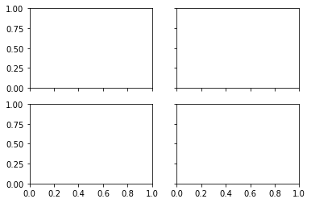
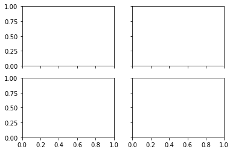

Görsel Veri Analizine Giriş#
Bu bölümde, Python’da en yaygın kullanılan ve güçlü veri görselleştirme kitaplıklarından biri olan Matplotlibkullanarak veri görselleştirme dünyasına giriş yapacağız. Matplotlib, Python programlama dili için bir grafik çizme kütüphanesidir ve verilerinizi görsel olarak temsil etmek için kullanılır. Bu kütüphane, doğrusal grafikler, dağılım grafikleri, pasta grafikleri, çubuk grafikleri ve daha birçok grafik türü oluşturmanızı sağlar. Matplotlib, ücretsiz ve açık kaynaklı bir yazılımdır ve Python’da veri analizi, makine öğrenimi, yapay zeka ve daha birçok alanda sıklıkla kullanılır. Bu eğitimde, Matplotlib kütüphanesinin temellerini öğreneceksiniz ve verilerinizi nasıl etkileyici grafiklere dönüştürebileceğinizi öğreneceksiniz.
Matplotlib Kütüphanesi#
Matplotlib, 2 ve 3 boyutlu grafiklerin çizilmesi için geliştirilmiş, anasayfası (http://matplotlib.org) adresinde bulunan, özellikle bilimsel ve mühendislik alanlarındaki veri görselleştirmelerinde sıklıkla kullanılan bir kütüphanedir. Veri görselleştirme ihtiyacı verinin olduğu her alanda geçerlidir. Çünkü büyük veri kümelerindeki veriyi nitelendiren özelliklere ve ölçülere genel çerçeveden bakılmak istendiğinde görsel araçlara ihtiyaç duyulur. Örneğin bir veri setinin dağılımı ile ilgili histogram grafikleri hızlı bir izlenim imkanı sunar. Aşağıdaki görselde tablo ile sunulamayacak bilgilerin veri görselleştirme ile göze hitap edecek şekilde sunulması için araçlar gösterilmiştir.

Matplotlib kütüphanesi NumPy üzerine kurulmuş bir kütüphanedir. Bu nedenle Matplotlib kütüphanesinin çağrılmasından önce NumPy kütüphanesinin de yüklü kütüphaneler arasında olması gereklidir. Matplotlib, verileri görselleştirmek için kullanılan güçlü bir kütüphanedir. Bu nedenle, Matplotlib’ın sunduğu avantajları kullanarak, verilerinizi etkileyici grafiklere dönüştürebilir ve daha kolay bir şekilde analiz edebilirsiniz. Kısaca Matplotlib kütüphanesinin önemli avantajlarını şu şekilde sunabiliriz:
Basit ve Kullanımı Kolay: Matplotlib, kullanımı kolay bir arayüze sahiptir ve temel grafik çizme işlevleri için hızlı ve basit bir şekilde kullanılabilir.
Geniş Kapsamlı Grafikler: Matplotlib, doğrusal grafikler, dağılım grafikleri, pasta grafikleri, çubuk grafikleri ve daha birçok grafik türü oluşturmanızı sağlar. Bu nedenle, verilerinizi birçok farklı şekilde görselleştirebilirsiniz.
Özelleştirilebilir Grafikler: Matplotlib ile grafiklerinizi özelleştirmek için birçok seçeneğe sahipsiniz. Renkler, çizgi stilleri, etiketler ve daha birçok şeyi kolayca özelleştirebilirsiniz.
Çoklu Veri Kümeleri: Matplotlib, birçok veri kümesini aynı grafikte birleştirmenize olanak tanır. Bu, verileriniz arasındaki ilişkileri anlamak için çoklu grafikleri karşılaştırmanızı ve birleştirmenizi sağlar.
Çoklu Çıktı Biçimleri: Matplotlib, grafikleri birçok farklı çıktı biçiminde kaydetmenizi sağlar. Grafikleri PNG, PDF, SVG ve daha birçok formatta kaydedebilirsiniz.
Ücretsiz ve Açık Kaynaklı: Matplotlib, ücretsiz ve açık kaynaklı bir yazılımdır ve Python topluluğu tarafından sıkça kullanılan bir kütüphanedir.
Matplotlib, Python dilindeki paket yöneticisi olan pip ile kolayca yüklenebilir. İlk olarak, aşağıdaki kodu kullanarak Matplotlib kütüphanesini Jupyter notebook üzerinden yükleyebilirsiniz:
!pip install matplotlib
veya
!conda install matplotlib
Matplotlib Grafiklerine Giriş#
Matplotlib ile görselleştirmelere geçmeden önce Matplotlib katmanlarından bahsetmekte fayda vardır. Matplotlib, çizimlerin oluşturulması ve düzenlenmesi için bir dizi katman sağlar. Aşağıda, Matplotlib’deki katmanların kısaca açıklamaları verilmiştir:
Figure: Figure, çizimlerin oluşturulduğu en üst düzey katmandır. Figure, genellikle birden fazla alt grafik (subplot) içerir. Birden fazla çizimi bir arada göstermek için kullanılabilir.
Axes: Axes, verilerin çizildiği katmandır. Grafikteki x ve y eksenleri gibi her şey, bu katmanda oluşturulur. Axes, tek bir grafik için birden fazla çizgi veya veri kümesi içerebilir.
Axis: Axis, x ve y eksenleri gibi her bir eksenin ayrı ayrı bulunduğu katmandır. Eksenlerdeki etiketler, işaretçiler ve çizgiler bu katmanda bulunur.
Artist: Artist, grafikte çizilen herhangi bir şeyi (çizgi, işaretçi, şekil, metin vb.) temsil eden bir katmandır. Grafikteki herhangi bir öğeyi özelleştirmek için bu katman kullanılabilir.
Matplotlib’deki bu katmanlar, grafik oluşturma ve özelleştirme sürecinde kullanılan araçlar ve işlevler sağlar. Bu katmanlar, Matplotlib’ın güçlü ve esnek bir grafik kütüphanesi olmasını sağlar.
Matplotlib’de bir grafik oluşturmak için ilk adım, bir “Figure” oluşturmaktır. “Figure”, en üst düzey çizim katmanıdır ve grafikteki her şeyin (eksenler, etiketler, veriler vb.) bulunduğu alanı tanımlar. Aşağıda bir “Figure” anatomisi anlatılmaktadır:

Figure: Figure, en üst düzey grafik alanıdır. Eksenler, metin, çizgiler ve diğer tüm öğeler bu alan içinde bulunur.
Axes: Axes, Figure içindeki verilerin çizildiği alandır. Her “Figure” bir veya daha fazla “Axes” içerebilir.
Axis: “Axes” içindeki bir eksen. Her “Axes” nesnesi, iki veya üç eksen içerir: x eksenleri, y eksenleri ve (varsa) z eksenleri.
Tick: “Axis” üzerindeki işaretleyicilerdir. Eksenin konumunu ve etiketlerini belirlerler.
Label: “Axis” üzerindeki işaretçi etiketidir. Eksenin neyi ölçtüğünü belirtir.
Spine: “Axis” çerçevesi boyunca uzanan çizgi. Spine’lar, verilerin eksenlerdeki konumlarını gösteren işaretleyicilerin üzerine yerleştirilebilir.
Grid: Verilerin konumunu gösteren çizgiler. Grid, eksenlerin etrafında oluşturulabilir.
Title: “Axes” üzerindeki başlık. Grafik hakkında özet bilgi sağlar.
Legend: Grafikteki farklı veri kümelerini açıklayan etiketler. “Axes” içindeki bir konuma yerleştirilebilir.
Matplotlib’de, bir “Figure” oluşturduktan sonra, “Axes” nesneleri ekleyebilir ve “Axis”, “Tick”, “Label” vb. özellikleri özelleştirebilirsiniz.
Matplotlib kütüphanesini çağırma#
Klasik bir Matplotlib kütüphane çağrılma yöntemi aşağıda verilmiştir.
import Matplotlib.pyplot as plt
Bu kod pyplot isimli modülün çağrılmasını sağlar. Bu modül sayesinde Matplotlib grafikleri, eksenleri ve aksisleri çizdirilebilir. Aşağıdaki görselde pyplot ile çizilen figürlerin objeleri gösterilmiştir.
Aşağıdaki kodlar ile matplotlib kütüphanesi çağrılmış olunur. Aynı zamanda NumPy ve Pandas kütüphanelerinin de başlangıçta çağrılmasında fayda vardır.
import numpy as np
import pandas as pd
import matplotlib.pyplot as plt
# from matplotlib import pyplot as plt
Basit bir Matplotlib grafiği kodları aşağıda paylaşılmıştır. plt.plot() ile x değerlerine karşılık gelen y değerleri çizdirilebilir.
# x ve y verileri
x = [1, 2, 3, 4, 5]
y = [2, 4, 6, 8, 10]
# Grafik oluşturma
plt.plot(x, y)
# Grafik özellikleri
plt.title("Örnek Grafik")
plt.xlabel("X Ekseni")
plt.ylabel("Y Ekseni")
# Grafik gösterimi
plt.show()
Bu örnekte, öncelikle matplotlib.pyplot modülü import edilir. Daha sonra, “x” ve “y” verileri tanımlanır. plt.plot(x, y) çağrısı ile, bu verileri içeren bir grafik oluşturulur.
Daha sonra, plt.title(), plt.xlabel() ve plt.ylabel() çağrıları ile grafik başlığı ve eksen etiketleri belirtilir. Son olarak, plt.show() çağrısı ile, oluşturulan grafik ekranda gösterilir.
Bu örnek, Matplotlib’in temel kullanımını göstermektedir. Grafik oluşturma sürecinde, “Axes” özelliklerini ve diğer özelleştirme seçeneklerini kullanarak grafikleri daha fazla özelleştirebilirsiniz.
plt.plot([1,2,3],[7,3,9]) # (1,7), (2,3), (3,9) noktalarını birleştirir
[<matplotlib.lines.Line2D at 0x191c3ec7b20>]
plt.plot([3, 5, 2]) # x ekseni verilmez ise varsayılan olarak 0-1-2... gelir
[<matplotlib.lines.Line2D at 0x191c3f3dac0>]
x = np.linspace(-np.pi, np.pi, 20) # -pi ile +pi arasında 20 adet değer
plt.plot(x, np.sin(x))
[<matplotlib.lines.Line2D at 0x191c3fb08e0>]
Grafiklere Özellik Ekleme#
Az önce çizdirilen grafikler x, y eksenleri ve alınan değerlerin birleştirilmesi ile oluşturuldu. Matplotlib kütüphanesinde eğer bir özellik tanımı yapılmaz ise grafikler yalın halde gelir. Ancak grafikler yalın halde anlamsızdır. x, y eksenlerinin neyi gösterdiği, grafiğin başlığının ne olduğu, verilerin neler olduğu grafik üzerinde gösterilmelidir.
Eksen etiketi, seri etiketi ve başlık özelliği ekleme#
label özelliği verilerin neler olduğunu gösterir. label özelliğinin grafik içerisinde gösterilmesi için plt.legend() fonksiyonu eklenmiştir.
plt.plot(x,np.sin(x), label = 'sin(x)')
plt.plot(x,np.cos(x), label = 'cos(x)')
plt.legend()
<matplotlib.legend.Legend at 0x191c4022460>
# Veya
plt.plot(x,np.sin(x))
plt.plot(x,np.cos(x))
plt.legend(('sin', 'cos'), loc='best')
<matplotlib.legend.Legend at 0x191c40a7a30>
legend() fonksiyonu içerisine tanımlanacak parametreler ile etiketlerin konumu değiştirilebilir.
plt.plot(x,np.sin(x), label = 'sin(x)')
plt.plot(x,np.cos(x), label = 'cos(x)')
plt.legend(loc='best'); # upper left upper right
Grafiklerin üzerine başlık eklemek, grafiğin içeriği hakkında daha fazla bilgi verir. Başlık, title() işlevi kullanılarak eklenebilir. Örneğin:
plt.plot(x,np.sin(x), label = 'sin(x)')
plt.plot(x,np.cos(x), label = 'cos(x)')
plt.legend(loc=7); # upper left upper right
plt.title('Sinüs Fonksiyonu')
plt.show()
Etiket fontlarını değiştirme#
Aşağıdaki örnekte birden fazla çizim aynı grafik üzerinde gerçekleştirilmiştir. Buna göre 3 farklı çizimi gösterdikten sonra etiketlerin fontları üzerinde değişiklikler gerçekleştirdik.
Renk kullanımında plot() işlevi, color parametresi ile çizgi rengini belirleyebilir. Ayrıca, hex renk kodlarını veya RGB veya RGBA renk değerlerini de kullanabilirsiniz. Örneğin:
# Ya da aynı figür üzerinde şekil çizmek istersek
plt.plot(x, np.sin(x), x, np.cos(x), x, x**2); # ; fonksiyon yazmak istemezsek
# Etiketlerin fontlarını değiştirme
plt.plot(x, np.sin(x), x, np.cos(x), x, x**2)
plt.xlabel("x değerleri")
plt.ylabel("y değerleri")
plt.title("x, y grafiği",
fontdict={
'family': 'serif',
'color': 'red',
'size': 20
},
loc='right')
Text(1.0, 1.0, 'x, y grafiği')
Fontlarla ilgili daha detaylı bilgi şu adresten alınabilir.
Izgaraları gösterme#
plt.plot(x, np.sin(x), x, np.cos(x), x, x**2)
plt.grid(True, axis='y') # axis='x' sadece x ekseninde ızgaralar gösterir
Renk ve çizgi stillerini değiştirme#
Bu örnekte, “color”, “linestyle” ve “linewidth” parametreleri kullanılarak çizgi rengi, stil ve kalınlığı belirtilir.
# çizgilerin kalınlıklarının ayarlanması
plt.plot(x, np.sin(x), x, np.cos(x), x, x**2, linewidth=5);
plt.grid()
# çizgi stilleri
plt.plot(x, np.sin(x), linestyle='dashed', label='sin')
plt.plot(x, np.cos(x), linestyle='--', label='cos')
plt.plot(x, x**2, label='kare', linestyle='-.')
plt.grid()
plt.legend()
<matplotlib.legend.Legend at 0x191c514ea00>

Diğer diğer parametreler için şu adresten bilgi alınabilir.
Marker özellikleri#
Bu örnekte, “marker” ve “markersize” parametreleri kullanılarak çizgi üzerinde işaretleyici (marker) boyutu ve şekli belirtilir. Detaylı bilgi link
# Grafik oluşturma
plt.plot(x, np.sin(x), label='sin', marker = 'x')
plt.plot(x, np.cos(x), label='cos', marker= 'p')
plt.plot(x, x**2, label='kare',color='red', marker='o', markersize=8)
# Grafik özellikleri
plt.title("Örnek Grafik")
plt.xlabel("X Ekseni")
plt.ylabel("Y Ekseni")
# Grafik gösterimi
plt.show()
Matplotlib, çizgi komutlarının marker parametresi kullanılarak seçilen birden fazla kategoriye sahip markerları destekler:
Doldurulmamış markerlar
Doldurulmuş markerlar
TeX sembollerinden oluşturulan markerlar
Yollardan oluşturulan markerlar
Doldurulmamış markerlar (Unfilled markers)
 Doldurulmuş markerlar (Filled)
Doldurulmuş markerlar (Filled)
 Marker fill styles
Marker fill styles
 TeX sembollerinden oluşturulan markerlar
TeX sembollerinden oluşturulan markerlar
 Yollardan oluşturulan markerlar
Yollardan oluşturulan markerlar

Eksenleri sınırlandırma ve işaretleme#
xlim ve ylim, bir grafikte gösterilen x ve y eksenlerinin sınırlarını belirlemek için kullanılan fonksiyonlardır.
xlim ve ylim fonksiyonlarına verilen değerler, belirtilen eksenin en küçük ve en büyük değerlerini belirler. Örneğin, aşağıdaki kod bloğunda, xlim ve ylim kullanarak bir çizgi grafiğinin x ve y eksenlerinin sınırlarını ayarladık:
# x ve y verileri
x = np.linspace(0, 10, 100)
y = np.sin(x)
# çizgi grafiği çizdirme
plt.plot(x, y)
# x ve y eksenlerinin sınırlarını belirleme
plt.xlim([2, 8])
plt.ylim([-1.2, 1.2])
# grafiği gösterme
plt.show()
Bu örnekte, xlim([2, 8]) fonksiyonuyla x ekseni sınırları 2 ve 8 arasına, ylim([-1.2, 1.2]) fonksiyonuyla y ekseni sınırları -1.2 ve 1.2 arasına ayarlandı.
xticks ve yticks, bir grafikteki x ve y eksenlerinin işaretlenmesini (tick) kontrol etmek için kullanılan fonksiyonlardır.
xticks ve yticks fonksiyonları, aşağıdaki gibi kullanılabilir:
plt.plot(x, y)
# x ve y ekseni işaretlerini ayarlama
plt.xticks(np.arange(0, 11, step=2))
plt.yticks([-1, 0, 1])
# grafiği gösterme
plt.show()
Bu örnekte, xticks fonksiyonu ile x ekseni işaretlerinin aralıklarını belirliyoruz. np.arange(0, 11, step=2) ifadesi, x ekseni işaretlerinin 0’dan başlayarak 2’şer arttırılarak 10’a kadar olan sayılar olduğunu belirtir. yticks fonksiyonu ise, y ekseni işaretlerini belirliyoruz. [-1, 0, 1] ifadesi ile y ekseni işaretlerinin -1, 0 ve 1 olduğunu belirtiyoruz.
Renk Haritası (Colormap) Özellikleri#
Matplotlib kütüphanesi, renk haritaları veya colormap olarak adlandırılan, verilerin renklendirilmesi için kullanılan özel renk paletlerini destekler. Colormap’lar, veri yoğunluğu veya sıcaklık, deniz seviyesi yüksekliği veya diğer özelliklerin belirtilmesi gibi verilerin özelliklerini vurgulamak için kullanılabilir.
Matplotlib’teki çeşitli colormap’lar, farklı renk paletleri ve renk geçişleri sunar. Bazı örnek colormap’lar şunlardır:
viridis
plasma
inferno
magma
coolwarm
Colormap’lar genellikle plt.imshow() veya plt.pcolor() gibi işlevlerle kullanılır. Colormap özellikleri, cmap parametresi veya renk paleti adı olarak belirtilerek seçilebilir.
Bunun yanı sıra, colormap’ların skalasını özelleştirmek için farklı renk dönüşüm (color map transformation) işlevleri de kullanılabilir. Örneğin, plt.Normalize() işlevi, renk skalasının belirli bir aralığa ölçeklendirilmesine olanak tanır.
Aşağıdaki örnekte tablo verilerini renklendirmek için colormap kullanımına örnek olarak, bir heatmap oluşturalım. Veriler, farklı bölgelerin aylık ortalama sıcaklıklarını içeren bir numpy dizisinden alınacak.
# Veri dizisi oluşturma
data = np.array([[12, 13, 15, 20, 23, 27, 30, 29, 26, 21, 16, 13],
[8, 9, 12, 17, 21, 25, 27, 26, 23, 18, 13, 9],
[5, 6, 9, 14, 18, 23, 25, 25, 22, 17, 11, 7],
[3, 4, 7, 11, 15, 19, 21, 21, 18, 13, 8, 5],
[1, 2, 4, 7, 11, 15, 17, 17, 15, 11, 6, 3]])
# Renk haritası (colormap) özelleştirme
cmap = plt.cm.get_cmap('coolwarm')
norm = plt.Normalize(vmin=data.min(), vmax=data.max())
# Resim çizimi
plt.imshow(data, cmap=cmap, norm=norm)
# Renk skalası oluşturma
cbar = plt.colorbar()
cbar.ax.set_ylabel('Sıcaklık (°C)')
# Eksen etiketleri ekleme
plt.xticks(range(12), ['Oca', 'Şub', 'Mar', 'Nis', 'May', 'Haz', 'Tem', 'Ağu', 'Eyl', 'Eki', 'Kas', 'Ara'])
plt.yticks(range(5), ['Bölge 1', 'Bölge 2', 'Bölge 3', 'Bölge 4', 'Bölge 5'])
plt.xlabel('Aylar')
plt.ylabel('Bölgeler')
# Başlığı ekleme
plt.title('Bölgelere Göre Aylık Ortalama Sıcaklıklar')
# Resmi gösterme
plt.show()
Bu kod, imshow() işlevi kullanarak veri dizisini bir ısı haritası olarak gösterir. Veriler, coolwarm renk haritasına göre renklendirilir. Normalize() işlevi, verilerin minimum ve maksimum değerlerine göre normalleştirir. colorbar() işlevi, renk skalasını resmin yanına ekler. Sonuç olarak, verilerin özelliklerine ve sıcaklık değişimlerine göre vurgulanarak görsel olarak daha anlaşılır bir şekilde sunulur.
Çoklu Figürler Çoklu Matplotlib Grafikleri#
Bazı durumlarda birden fazla grafik bir figür içerisinde verilmek istenebilir. Böylece tek seferde okuyucuya birden fazla durumla ilgili özet bilgi sunulmuş olunur. Daha önceden belirtilen Figure ve Axes kavramları kullanılarak Matplotlib içerisinde birden fazla grafik subplot() fonksiyonu ile yerine getirilebilir.
Subplot() fonksiyonu ile istenilen sayıda satır ve sütunda grafikler figürlere eklenebilir.
Subplot fonksiyonundan önce matplotlib kütüphanesindeki iki farklı yaklaşımdan bahsetmekte fayda vardır. Bunlar;
MATLAB tipi pyplot ile grafik çizdirme#
Pyplot ile çizdirilen grafik bir hücre için değiştirilebilir bir grafiktir. Başka hücrede yeni bir pyplot objesi eklenirse yeni grafikler çizdirilebilir. MATLAB programındakine benzer şekilde grafik çizdirme yöntemidir. Daha önce gösterilen grafikler pyplot ile çizdirilen grafiklerdi.
Nesne yönelimli şekilde grafik çizdirme.#
Matplotlib kütüphanesinin önemli özelliklerinden birisi de nesne yönelimli programlamaya izin vermesidir. Çizim alanı anlamına gelen Figure objesi Matplotlib kütüphanesinin tepesinde yer alır. Diğer elemanlar ise Artist diye bilinir ve aşağıdaki görselde gösterilen mavi yerler Artist olarak geçmektedir. Artistler Axes(Eksenler)den oluşur. Eksenler ise Axis öğelerinden oluşur.
Eksenler(Axes) grafikleri tutan objelerdir. Bir grafik çizdirebilmek için en az bir eksenin figür içerisine eklenmesi gerekmektedir. Axis’ler ise x ve y aksis i olabilir ya da üçüncü boyut varsa z axis i de devreye girer. Bu nedenle x veya y deki limitleri veya çizgileri ayarlamak için axis özelliğini kullanmak gerekecektir. Matplotlib ile daha gelişmiş ve pratik grafik çizimleri için bu hiyerarşiyi anlamak faydalı olacaktır.
Ayrıca nesne yönelimli yapı kullanılarak çok daha hızlı ve temiz grafikler çizilebilir. Hızlı grafik çizimleri için MATLAB stili grafik çizdirmek önerilse de daha detaylı işler için nesne yönelimli yapı önerilmektedir.
# basit bir matplotlib grafiği
fig, ax = plt.subplots() # Tek eksenden oluşan bir figür oluşturmak için
ax.plot([1, 2, 3, 4], [1, 4, 2, 3]) # Eksen içerisine bir grafik çizdirmek için
[<matplotlib.lines.Line2D at 0x191c53e37f0>]
print(type(fig))
<class 'matplotlib.figure.Figure'>
help(fig)
Help on Figure in module matplotlib.figure object:
class Figure(FigureBase)
| Figure(figsize=None, dpi=None, facecolor=None, edgecolor=None, linewidth=0.0, frameon=None, subplotpars=None, tight_layout=None, constrained_layout=None)
|
| The top level container for all the plot elements.
|
| The Figure instance supports callbacks through a *callbacks* attribute
| which is a `.CallbackRegistry` instance. The events you can connect to
| are 'dpi_changed', and the callback will be called with ``func(fig)`` where
| fig is the `Figure` instance.
|
| Attributes
| ----------
| patch
| The `.Rectangle` instance representing the figure background patch.
|
| suppressComposite
| For multiple figure images, the figure will make composite images
| depending on the renderer option_image_nocomposite function. If
| *suppressComposite* is a boolean, this will override the renderer.
|
| Method resolution order:
| Figure
| FigureBase
| matplotlib.artist.Artist
| builtins.object
|
| Methods defined here:
|
| __getstate__(self)
|
| __init__(self, figsize=None, dpi=None, facecolor=None, edgecolor=None, linewidth=0.0, frameon=None, subplotpars=None, tight_layout=None, constrained_layout=None)
| Parameters
| ----------
| figsize : 2-tuple of floats, default: :rc:`figure.figsize`
| Figure dimension ``(width, height)`` in inches.
|
| dpi : float, default: :rc:`figure.dpi`
| Dots per inch.
|
| facecolor : default: :rc:`figure.facecolor`
| The figure patch facecolor.
|
| edgecolor : default: :rc:`figure.edgecolor`
| The figure patch edge color.
|
| linewidth : float
| The linewidth of the frame (i.e. the edge linewidth of the figure
| patch).
|
| frameon : bool, default: :rc:`figure.frameon`
| If ``False``, suppress drawing the figure background patch.
|
| subplotpars : `SubplotParams`
| Subplot parameters. If not given, the default subplot
| parameters :rc:`figure.subplot.*` are used.
|
| tight_layout : bool or dict, default: :rc:`figure.autolayout`
| If ``False`` use *subplotpars*. If ``True`` adjust subplot
| parameters using `.tight_layout` with default padding.
| When providing a dict containing the keys ``pad``, ``w_pad``,
| ``h_pad``, and ``rect``, the default `.tight_layout` paddings
| will be overridden.
|
| constrained_layout : bool, default: :rc:`figure.constrained_layout.use`
| If ``True`` use constrained layout to adjust positioning of plot
| elements. Like ``tight_layout``, but designed to be more
| flexible. See
| :doc:`/tutorials/intermediate/constrainedlayout_guide`
| for examples. (Note: does not work with `add_subplot` or
| `~.pyplot.subplot2grid`.)
|
| __repr__(self)
| Return repr(self).
|
| __setstate__(self, state)
|
| __str__(self)
| Return str(self).
|
| add_axobserver(self, func)
| Whenever the Axes state change, ``func(self)`` will be called.
|
| clear(self, keep_observers=False)
| Clear the figure -- synonym for `clf`.
|
| clf(self, keep_observers=False)
| Clear the figure.
|
| Set *keep_observers* to True if, for example,
| a gui widget is tracking the Axes in the figure.
|
| draw(self, renderer)
| Draw the Artist (and its children) using the given renderer.
|
| This has no effect if the artist is not visible (`.Artist.get_visible`
| returns False).
|
| Parameters
| ----------
| renderer : `.RendererBase` subclass.
|
| Notes
| -----
| This method is overridden in the Artist subclasses.
|
| draw_artist(self, a)
| Draw `.Artist` *a* only.
|
| This method can only be used after an initial draw of the figure,
| because that creates and caches the renderer needed here.
|
| execute_constrained_layout(self, renderer=None)
| Use ``layoutgrid`` to determine pos positions within Axes.
|
| See also `.set_constrained_layout_pads`.
|
| figimage(self, X, xo=0, yo=0, alpha=None, norm=None, cmap=None, vmin=None, vmax=None, origin=None, resize=False, **kwargs)
| Add a non-resampled image to the figure.
|
| The image is attached to the lower or upper left corner depending on
| *origin*.
|
| Parameters
| ----------
| X
| The image data. This is an array of one of the following shapes:
|
| - MxN: luminance (grayscale) values
| - MxNx3: RGB values
| - MxNx4: RGBA values
|
| xo, yo : int
| The *x*/*y* image offset in pixels.
|
| alpha : None or float
| The alpha blending value.
|
| norm : `matplotlib.colors.Normalize`
| A `.Normalize` instance to map the luminance to the
| interval [0, 1].
|
| cmap : str or `matplotlib.colors.Colormap`, default: :rc:`image.cmap`
| The colormap to use.
|
| vmin, vmax : float
| If *norm* is not given, these values set the data limits for the
| colormap.
|
| origin : {'upper', 'lower'}, default: :rc:`image.origin`
| Indicates where the [0, 0] index of the array is in the upper left
| or lower left corner of the axes.
|
| resize : bool
| If *True*, resize the figure to match the given image size.
|
| Returns
| -------
| `matplotlib.image.FigureImage`
|
| Other Parameters
| ----------------
| **kwargs
| Additional kwargs are `.Artist` kwargs passed on to `.FigureImage`.
|
| Notes
| -----
| figimage complements the Axes image (`~matplotlib.axes.Axes.imshow`)
| which will be resampled to fit the current Axes. If you want
| a resampled image to fill the entire figure, you can define an
| `~matplotlib.axes.Axes` with extent [0, 0, 1, 1].
|
| Examples
| --------
| ::
|
| f = plt.figure()
| nx = int(f.get_figwidth() * f.dpi)
| ny = int(f.get_figheight() * f.dpi)
| data = np.random.random((ny, nx))
| f.figimage(data)
| plt.show()
|
| get_axes(self)
| Return a list of Axes in the Figure. You can access and modify the
| Axes in the Figure through this list.
|
| Do not modify the list itself. Instead, use `~Figure.add_axes`,
| `~.Figure.add_subplot` or `~.Figure.delaxes` to add or remove an Axes.
|
| Note: This is equivalent to the property `~.Figure.axes`.
|
| get_constrained_layout(self)
| Return whether constrained layout is being used.
|
| See :doc:`/tutorials/intermediate/constrainedlayout_guide`.
|
| get_constrained_layout_pads(self, relative=False)
| Get padding for ``constrained_layout``.
|
| Returns a list of ``w_pad, h_pad`` in inches and
| ``wspace`` and ``hspace`` as fractions of the subplot.
|
| See :doc:`/tutorials/intermediate/constrainedlayout_guide`.
|
| Parameters
| ----------
| relative : bool
| If `True`, then convert from inches to figure relative.
|
| get_dpi(self)
| Return the resolution in dots per inch as a float.
|
| get_figheight(self)
| Return the figure height in inches.
|
| get_figwidth(self)
| Return the figure width in inches.
|
| get_size_inches(self)
| Return the current size of the figure in inches.
|
| Returns
| -------
| ndarray
| The size (width, height) of the figure in inches.
|
| See Also
| --------
| matplotlib.figure.Figure.set_size_inches
| matplotlib.figure.Figure.get_figwidth
| matplotlib.figure.Figure.get_figheight
|
| Notes
| -----
| The size in pixels can be obtained by multiplying with `Figure.dpi`.
|
| get_tight_layout(self)
| Return whether `.tight_layout` is called when drawing.
|
| ginput(self, n=1, timeout=30, show_clicks=True, mouse_add=<MouseButton.LEFT: 1>, mouse_pop=<MouseButton.RIGHT: 3>, mouse_stop=<MouseButton.MIDDLE: 2>)
| Blocking call to interact with a figure.
|
| Wait until the user clicks *n* times on the figure, and return the
| coordinates of each click in a list.
|
| There are three possible interactions:
|
| - Add a point.
| - Remove the most recently added point.
| - Stop the interaction and return the points added so far.
|
| The actions are assigned to mouse buttons via the arguments
| *mouse_add*, *mouse_pop* and *mouse_stop*.
|
| Parameters
| ----------
| n : int, default: 1
| Number of mouse clicks to accumulate. If negative, accumulate
| clicks until the input is terminated manually.
| timeout : float, default: 30 seconds
| Number of seconds to wait before timing out. If zero or negative
| will never timeout.
| show_clicks : bool, default: True
| If True, show a red cross at the location of each click.
| mouse_add : `.MouseButton` or None, default: `.MouseButton.LEFT`
| Mouse button used to add points.
| mouse_pop : `.MouseButton` or None, default: `.MouseButton.RIGHT`
| Mouse button used to remove the most recently added point.
| mouse_stop : `.MouseButton` or None, default: `.MouseButton.MIDDLE`
| Mouse button used to stop input.
|
| Returns
| -------
| list of tuples
| A list of the clicked (x, y) coordinates.
|
| Notes
| -----
| The keyboard can also be used to select points in case your mouse
| does not have one or more of the buttons. The delete and backspace
| keys act like right clicking (i.e., remove last point), the enter key
| terminates input and any other key (not already used by the window
| manager) selects a point.
|
| init_layoutgrid(self)
| Initialize the layoutgrid for use in constrained_layout.
|
| savefig(self, fname, *, transparent=None, **kwargs)
| Save the current figure.
|
| Call signature::
|
| savefig(fname, dpi=None, facecolor='w', edgecolor='w',
| orientation='portrait', papertype=None, format=None,
| transparent=False, bbox_inches=None, pad_inches=0.1,
| frameon=None, metadata=None)
|
| The available output formats depend on the backend being used.
|
| Parameters
| ----------
| fname : str or path-like or binary file-like
| A path, or a Python file-like object, or
| possibly some backend-dependent object such as
| `matplotlib.backends.backend_pdf.PdfPages`.
|
| If *format* is set, it determines the output format, and the file
| is saved as *fname*. Note that *fname* is used verbatim, and there
| is no attempt to make the extension, if any, of *fname* match
| *format*, and no extension is appended.
|
| If *format* is not set, then the format is inferred from the
| extension of *fname*, if there is one. If *format* is not
| set and *fname* has no extension, then the file is saved with
| :rc:`savefig.format` and the appropriate extension is appended to
| *fname*.
|
| Other Parameters
| ----------------
| dpi : float or 'figure', default: :rc:`savefig.dpi`
| The resolution in dots per inch. If 'figure', use the figure's
| dpi value.
|
| quality : int, default: :rc:`savefig.jpeg_quality`
| Applicable only if *format* is 'jpg' or 'jpeg', ignored otherwise.
|
| The image quality, on a scale from 1 (worst) to 95 (best).
| Values above 95 should be avoided; 100 disables portions of
| the JPEG compression algorithm, and results in large files
| with hardly any gain in image quality.
|
| This parameter is deprecated.
|
| optimize : bool, default: False
| Applicable only if *format* is 'jpg' or 'jpeg', ignored otherwise.
|
| Whether the encoder should make an extra pass over the image
| in order to select optimal encoder settings.
|
| This parameter is deprecated.
|
| progressive : bool, default: False
| Applicable only if *format* is 'jpg' or 'jpeg', ignored otherwise.
|
| Whether the image should be stored as a progressive JPEG file.
|
| This parameter is deprecated.
|
| facecolor : color or 'auto', default: :rc:`savefig.facecolor`
| The facecolor of the figure. If 'auto', use the current figure
| facecolor.
|
| edgecolor : color or 'auto', default: :rc:`savefig.edgecolor`
| The edgecolor of the figure. If 'auto', use the current figure
| edgecolor.
|
| orientation : {'landscape', 'portrait'}
| Currently only supported by the postscript backend.
|
| papertype : str
| One of 'letter', 'legal', 'executive', 'ledger', 'a0' through
| 'a10', 'b0' through 'b10'. Only supported for postscript
| output.
|
| format : str
| The file format, e.g. 'png', 'pdf', 'svg', ... The behavior when
| this is unset is documented under *fname*.
|
| transparent : bool
| If *True*, the Axes patches will all be transparent; the
| figure patch will also be transparent unless facecolor
| and/or edgecolor are specified via kwargs.
| This is useful, for example, for displaying
| a plot on top of a colored background on a web page. The
| transparency of these patches will be restored to their
| original values upon exit of this function.
|
| bbox_inches : str or `.Bbox`, default: :rc:`savefig.bbox`
| Bounding box in inches: only the given portion of the figure is
| saved. If 'tight', try to figure out the tight bbox of the figure.
|
| pad_inches : float, default: :rc:`savefig.pad_inches`
| Amount of padding around the figure when bbox_inches is 'tight'.
|
| bbox_extra_artists : list of `~matplotlib.artist.Artist`, optional
| A list of extra artists that will be considered when the
| tight bbox is calculated.
|
| backend : str, optional
| Use a non-default backend to render the file, e.g. to render a
| png file with the "cairo" backend rather than the default "agg",
| or a pdf file with the "pgf" backend rather than the default
| "pdf". Note that the default backend is normally sufficient. See
| :ref:`the-builtin-backends` for a list of valid backends for each
| file format. Custom backends can be referenced as "module://...".
|
| metadata : dict, optional
| Key/value pairs to store in the image metadata. The supported keys
| and defaults depend on the image format and backend:
|
| - 'png' with Agg backend: See the parameter ``metadata`` of
| `~.FigureCanvasAgg.print_png`.
| - 'pdf' with pdf backend: See the parameter ``metadata`` of
| `~.backend_pdf.PdfPages`.
| - 'svg' with svg backend: See the parameter ``metadata`` of
| `~.FigureCanvasSVG.print_svg`.
| - 'eps' and 'ps' with PS backend: Only 'Creator' is supported.
|
| pil_kwargs : dict, optional
| Additional keyword arguments that are passed to
| `PIL.Image.Image.save` when saving the figure.
|
| set_canvas(self, canvas)
| Set the canvas that contains the figure
|
| Parameters
| ----------
| canvas : FigureCanvas
|
| set_constrained_layout(self, constrained)
| Set whether ``constrained_layout`` is used upon drawing. If None,
| :rc:`figure.constrained_layout.use` value will be used.
|
| When providing a dict containing the keys `w_pad`, `h_pad`
| the default ``constrained_layout`` paddings will be
| overridden. These pads are in inches and default to 3.0/72.0.
| ``w_pad`` is the width padding and ``h_pad`` is the height padding.
|
| See :doc:`/tutorials/intermediate/constrainedlayout_guide`.
|
| Parameters
| ----------
| constrained : bool or dict or None
|
| set_constrained_layout_pads(self, **kwargs)
| Set padding for ``constrained_layout``. Note the kwargs can be passed
| as a dictionary ``fig.set_constrained_layout(**paddict)``.
|
| See :doc:`/tutorials/intermediate/constrainedlayout_guide`.
|
| Parameters
| ----------
| w_pad : float
| Width padding in inches. This is the pad around Axes
| and is meant to make sure there is enough room for fonts to
| look good. Defaults to 3 pts = 0.04167 inches
|
| h_pad : float
| Height padding in inches. Defaults to 3 pts.
|
| wspace : float
| Width padding between subplots, expressed as a fraction of the
| subplot width. The total padding ends up being w_pad + wspace.
|
| hspace : float
| Height padding between subplots, expressed as a fraction of the
| subplot width. The total padding ends up being h_pad + hspace.
|
| set_dpi(self, val)
| Set the resolution of the figure in dots-per-inch.
|
| Parameters
| ----------
| val : float
|
| set_figheight(self, val, forward=True)
| Set the height of the figure in inches.
|
| Parameters
| ----------
| val : float
| forward : bool
| See `set_size_inches`.
|
| See Also
| --------
| matplotlib.figure.Figure.set_figwidth
| matplotlib.figure.Figure.set_size_inches
|
| set_figwidth(self, val, forward=True)
| Set the width of the figure in inches.
|
| Parameters
| ----------
| val : float
| forward : bool
| See `set_size_inches`.
|
| See Also
| --------
| matplotlib.figure.Figure.set_figheight
| matplotlib.figure.Figure.set_size_inches
|
| set_size_inches(self, w, h=None, forward=True)
| Set the figure size in inches.
|
| Call signatures::
|
| fig.set_size_inches(w, h) # OR
| fig.set_size_inches((w, h))
|
| Parameters
| ----------
| w : (float, float) or float
| Width and height in inches (if height not specified as a separate
| argument) or width.
| h : float
| Height in inches.
| forward : bool, default: True
| If ``True``, the canvas size is automatically updated, e.g.,
| you can resize the figure window from the shell.
|
| See Also
| --------
| matplotlib.figure.Figure.get_size_inches
| matplotlib.figure.Figure.set_figwidth
| matplotlib.figure.Figure.set_figheight
|
| Notes
| -----
| To transform from pixels to inches divide by `Figure.dpi`.
|
| set_tight_layout(self, tight)
| Set whether and how `.tight_layout` is called when drawing.
|
| Parameters
| ----------
| tight : bool or dict with keys "pad", "w_pad", "h_pad", "rect" or None
| If a bool, sets whether to call `.tight_layout` upon drawing.
| If ``None``, use the ``figure.autolayout`` rcparam instead.
| If a dict, pass it as kwargs to `.tight_layout`, overriding the
| default paddings.
|
| show(self, warn=True)
| If using a GUI backend with pyplot, display the figure window.
|
| If the figure was not created using `~.pyplot.figure`, it will lack
| a `~.backend_bases.FigureManagerBase`, and this method will raise an
| AttributeError.
|
| .. warning::
|
| This does not manage an GUI event loop. Consequently, the figure
| may only be shown briefly or not shown at all if you or your
| environment are not managing an event loop.
|
| Proper use cases for `.Figure.show` include running this from a
| GUI application or an IPython shell.
|
| If you're running a pure python shell or executing a non-GUI
| python script, you should use `matplotlib.pyplot.show` instead,
| which takes care of managing the event loop for you.
|
| Parameters
| ----------
| warn : bool, default: True
| If ``True`` and we are not running headless (i.e. on Linux with an
| unset DISPLAY), issue warning when called on a non-GUI backend.
|
| tight_layout(self, *, pad=1.08, h_pad=None, w_pad=None, rect=None)
| Adjust the padding between and around subplots.
|
| To exclude an artist on the Axes from the bounding box calculation
| that determines the subplot parameters (i.e. legend, or annotation),
| set ``a.set_in_layout(False)`` for that artist.
|
| Parameters
| ----------
| pad : float, default: 1.08
| Padding between the figure edge and the edges of subplots,
| as a fraction of the font size.
| h_pad, w_pad : float, default: *pad*
| Padding (height/width) between edges of adjacent subplots,
| as a fraction of the font size.
| rect : tuple (left, bottom, right, top), default: (0, 0, 1, 1)
| A rectangle in normalized figure coordinates into which the whole
| subplots area (including labels) will fit.
|
| See Also
| --------
| .Figure.set_tight_layout
| .pyplot.tight_layout
|
| waitforbuttonpress(self, timeout=-1)
| Blocking call to interact with the figure.
|
| Wait for user input and return True if a key was pressed, False if a
| mouse button was pressed and None if no input was given within
| *timeout* seconds. Negative values deactivate *timeout*.
|
| ----------------------------------------------------------------------
| Readonly properties defined here:
|
| axes
| List of Axes in the Figure. You can access and modify the Axes in the
| Figure through this list.
|
| Do not modify the list itself. Instead, use "`~Figure.add_axes`,
| `~.Figure.add_subplot` or `~.Figure.delaxes` to add or remove an Axes.
|
| ----------------------------------------------------------------------
| Data descriptors defined here:
|
| dpi
| The resolution in dots per inch.
|
| ----------------------------------------------------------------------
| Methods inherited from FigureBase:
|
| add_artist(self, artist, clip=False)
| Add an `.Artist` to the figure.
|
| Usually artists are added to Axes objects using `.Axes.add_artist`;
| this method can be used in the rare cases where one needs to add
| artists directly to the figure instead.
|
| Parameters
| ----------
| artist : `~matplotlib.artist.Artist`
| The artist to add to the figure. If the added artist has no
| transform previously set, its transform will be set to
| ``figure.transSubfigure``.
| clip : bool, default: False
| Whether the added artist should be clipped by the figure patch.
|
| Returns
| -------
| `~matplotlib.artist.Artist`
| The added artist.
|
| add_axes(self, *args, **kwargs)
| Add an Axes to the figure.
|
| Call signatures::
|
| add_axes(rect, projection=None, polar=False, **kwargs)
| add_axes(ax)
|
| Parameters
| ----------
| rect : sequence of float
| The dimensions [left, bottom, width, height] of the new Axes. All
| quantities are in fractions of figure width and height.
|
| projection : {None, 'aitoff', 'hammer', 'lambert', 'mollweide', 'polar', 'rectilinear', str}, optional
| The projection type of the `~.axes.Axes`. *str* is the name of
| a custom projection, see `~matplotlib.projections`. The default
| None results in a 'rectilinear' projection.
|
| polar : bool, default: False
| If True, equivalent to projection='polar'.
|
| axes_class : subclass type of `~.axes.Axes`, optional
| The `.axes.Axes` subclass that is instantiated. This parameter
| is incompatible with *projection* and *polar*. See
| :ref:`axisartist_users-guide-index` for examples.
|
| sharex, sharey : `~.axes.Axes`, optional
| Share the x or y `~matplotlib.axis` with sharex and/or sharey.
| The axis will have the same limits, ticks, and scale as the axis
| of the shared axes.
|
| label : str
| A label for the returned Axes.
|
| Returns
| -------
| `~.axes.Axes`, or a subclass of `~.axes.Axes`
| The returned axes class depends on the projection used. It is
| `~.axes.Axes` if rectilinear projection is used and
| `.projections.polar.PolarAxes` if polar projection is used.
|
| Other Parameters
| ----------------
| **kwargs
| This method also takes the keyword arguments for
| the returned Axes class. The keyword arguments for the
| rectilinear Axes class `~.axes.Axes` can be found in
| the following table but there might also be other keyword
| arguments if another projection is used, see the actual Axes
| class.
|
| Properties:
| adjustable: {'box', 'datalim'}
| agg_filter: a filter function, which takes a (m, n, 3) float array and a dpi value, and returns a (m, n, 3) array
| alpha: scalar or None
| anchor: 2-tuple of floats or {'C', 'SW', 'S', 'SE', ...}
| animated: bool
| aspect: {'auto', 'equal'} or float
| autoscale_on: bool
| autoscalex_on: bool
| autoscaley_on: bool
| axes_locator: Callable[[Axes, Renderer], Bbox]
| axisbelow: bool or 'line'
| box_aspect: float or None
| clip_box: `.Bbox`
| clip_on: bool
| clip_path: Patch or (Path, Transform) or None
| contains: unknown
| facecolor or fc: color
| figure: `.Figure`
| frame_on: bool
| gid: str
| in_layout: bool
| label: object
| navigate: bool
| navigate_mode: unknown
| path_effects: `.AbstractPathEffect`
| picker: None or bool or float or callable
| position: [left, bottom, width, height] or `~matplotlib.transforms.Bbox`
| prop_cycle: unknown
| rasterization_zorder: float or None
| rasterized: bool
| sketch_params: (scale: float, length: float, randomness: float)
| snap: bool or None
| title: str
| transform: `.Transform`
| url: str
| visible: bool
| xbound: unknown
| xlabel: str
| xlim: (bottom: float, top: float)
| xmargin: float greater than -0.5
| xscale: {"linear", "log", "symlog", "logit", ...} or `.ScaleBase`
| xticklabels: unknown
| xticks: unknown
| ybound: unknown
| ylabel: str
| ylim: (bottom: float, top: float)
| ymargin: float greater than -0.5
| yscale: {"linear", "log", "symlog", "logit", ...} or `.ScaleBase`
| yticklabels: unknown
| yticks: unknown
| zorder: float
|
| Notes
| -----
| In rare circumstances, `.add_axes` may be called with a single
| argument, an Axes instance already created in the present figure but
| not in the figure's list of Axes.
|
| See Also
| --------
| .Figure.add_subplot
| .pyplot.subplot
| .pyplot.axes
| .Figure.subplots
| .pyplot.subplots
|
| Examples
| --------
| Some simple examples::
|
| rect = l, b, w, h
| fig = plt.figure()
| fig.add_axes(rect)
| fig.add_axes(rect, frameon=False, facecolor='g')
| fig.add_axes(rect, polar=True)
| ax = fig.add_axes(rect, projection='polar')
| fig.delaxes(ax)
| fig.add_axes(ax)
|
| add_gridspec(self, nrows=1, ncols=1, **kwargs)
| Return a `.GridSpec` that has this figure as a parent. This allows
| complex layout of Axes in the figure.
|
| Parameters
| ----------
| nrows : int, default: 1
| Number of rows in grid.
|
| ncols : int, default: 1
| Number or columns in grid.
|
| Returns
| -------
| `.GridSpec`
|
| Other Parameters
| ----------------
| **kwargs
| Keyword arguments are passed to `.GridSpec`.
|
| See Also
| --------
| matplotlib.pyplot.subplots
|
| Examples
| --------
| Adding a subplot that spans two rows::
|
| fig = plt.figure()
| gs = fig.add_gridspec(2, 2)
| ax1 = fig.add_subplot(gs[0, 0])
| ax2 = fig.add_subplot(gs[1, 0])
| # spans two rows:
| ax3 = fig.add_subplot(gs[:, 1])
|
| add_subfigure(self, subplotspec, **kwargs)
| Add a `~.figure.SubFigure` to the figure as part of a subplot
| arrangement.
|
| Parameters
| ----------
| subplotspec : `.gridspec.SubplotSpec`
| Defines the region in a parent gridspec where the subfigure will
| be placed.
|
| Returns
| -------
| `.figure.SubFigure`
|
| Other Parameters
| ----------------
| **kwargs
| Are passed to the `~.figure.SubFigure` object.
|
| See Also
| --------
| .Figure.subfigures
|
| add_subplot(self, *args, **kwargs)
| Add an `~.axes.Axes` to the figure as part of a subplot arrangement.
|
| Call signatures::
|
| add_subplot(nrows, ncols, index, **kwargs)
| add_subplot(pos, **kwargs)
| add_subplot(ax)
| add_subplot()
|
| Parameters
| ----------
| *args : int, (int, int, *index*), or `.SubplotSpec`, default: (1, 1, 1)
| The position of the subplot described by one of
|
| - Three integers (*nrows*, *ncols*, *index*). The subplot will
| take the *index* position on a grid with *nrows* rows and
| *ncols* columns. *index* starts at 1 in the upper left corner
| and increases to the right. *index* can also be a two-tuple
| specifying the (*first*, *last*) indices (1-based, and including
| *last*) of the subplot, e.g., ``fig.add_subplot(3, 1, (1, 2))``
| makes a subplot that spans the upper 2/3 of the figure.
| - A 3-digit integer. The digits are interpreted as if given
| separately as three single-digit integers, i.e.
| ``fig.add_subplot(235)`` is the same as
| ``fig.add_subplot(2, 3, 5)``. Note that this can only be used
| if there are no more than 9 subplots.
| - A `.SubplotSpec`.
|
| In rare circumstances, `.add_subplot` may be called with a single
| argument, a subplot Axes instance already created in the
| present figure but not in the figure's list of Axes.
|
| projection : {None, 'aitoff', 'hammer', 'lambert', 'mollweide', 'polar', 'rectilinear', str}, optional
| The projection type of the subplot (`~.axes.Axes`). *str* is the
| name of a custom projection, see `~matplotlib.projections`. The
| default None results in a 'rectilinear' projection.
|
| polar : bool, default: False
| If True, equivalent to projection='polar'.
|
| axes_class : subclass type of `~.axes.Axes`, optional
| The `.axes.Axes` subclass that is instantiated. This parameter
| is incompatible with *projection* and *polar*. See
| :ref:`axisartist_users-guide-index` for examples.
|
| sharex, sharey : `~.axes.Axes`, optional
| Share the x or y `~matplotlib.axis` with sharex and/or sharey.
| The axis will have the same limits, ticks, and scale as the axis
| of the shared axes.
|
| label : str
| A label for the returned Axes.
|
| Returns
| -------
| `.axes.SubplotBase`, or another subclass of `~.axes.Axes`
|
| The Axes of the subplot. The returned Axes base class depends on
| the projection used. It is `~.axes.Axes` if rectilinear projection
| is used and `.projections.polar.PolarAxes` if polar projection
| is used. The returned Axes is then a subplot subclass of the
| base class.
|
| Other Parameters
| ----------------
| **kwargs
| This method also takes the keyword arguments for the returned Axes
| base class; except for the *figure* argument. The keyword arguments
| for the rectilinear base class `~.axes.Axes` can be found in
| the following table but there might also be other keyword
| arguments if another projection is used.
|
| Properties:
| adjustable: {'box', 'datalim'}
| agg_filter: a filter function, which takes a (m, n, 3) float array and a dpi value, and returns a (m, n, 3) array
| alpha: scalar or None
| anchor: 2-tuple of floats or {'C', 'SW', 'S', 'SE', ...}
| animated: bool
| aspect: {'auto', 'equal'} or float
| autoscale_on: bool
| autoscalex_on: bool
| autoscaley_on: bool
| axes_locator: Callable[[Axes, Renderer], Bbox]
| axisbelow: bool or 'line'
| box_aspect: float or None
| clip_box: `.Bbox`
| clip_on: bool
| clip_path: Patch or (Path, Transform) or None
| contains: unknown
| facecolor or fc: color
| figure: `.Figure`
| frame_on: bool
| gid: str
| in_layout: bool
| label: object
| navigate: bool
| navigate_mode: unknown
| path_effects: `.AbstractPathEffect`
| picker: None or bool or float or callable
| position: [left, bottom, width, height] or `~matplotlib.transforms.Bbox`
| prop_cycle: unknown
| rasterization_zorder: float or None
| rasterized: bool
| sketch_params: (scale: float, length: float, randomness: float)
| snap: bool or None
| title: str
| transform: `.Transform`
| url: str
| visible: bool
| xbound: unknown
| xlabel: str
| xlim: (bottom: float, top: float)
| xmargin: float greater than -0.5
| xscale: {"linear", "log", "symlog", "logit", ...} or `.ScaleBase`
| xticklabels: unknown
| xticks: unknown
| ybound: unknown
| ylabel: str
| ylim: (bottom: float, top: float)
| ymargin: float greater than -0.5
| yscale: {"linear", "log", "symlog", "logit", ...} or `.ScaleBase`
| yticklabels: unknown
| yticks: unknown
| zorder: float
|
| See Also
| --------
| .Figure.add_axes
| .pyplot.subplot
| .pyplot.axes
| .Figure.subplots
| .pyplot.subplots
|
| Examples
| --------
| ::
|
| fig = plt.figure()
|
| fig.add_subplot(231)
| ax1 = fig.add_subplot(2, 3, 1) # equivalent but more general
|
| fig.add_subplot(232, frameon=False) # subplot with no frame
| fig.add_subplot(233, projection='polar') # polar subplot
| fig.add_subplot(234, sharex=ax1) # subplot sharing x-axis with ax1
| fig.add_subplot(235, facecolor="red") # red subplot
|
| ax1.remove() # delete ax1 from the figure
| fig.add_subplot(ax1) # add ax1 back to the figure
|
| align_labels(self, axs=None)
| Align the xlabels and ylabels of subplots with the same subplots
| row or column (respectively) if label alignment is being
| done automatically (i.e. the label position is not manually set).
|
| Alignment persists for draw events after this is called.
|
| Parameters
| ----------
| axs : list of `~matplotlib.axes.Axes`
| Optional list (or ndarray) of `~matplotlib.axes.Axes`
| to align the labels.
| Default is to align all Axes on the figure.
|
| See Also
| --------
| matplotlib.figure.Figure.align_xlabels
|
| matplotlib.figure.Figure.align_ylabels
|
| align_xlabels(self, axs=None)
| Align the xlabels of subplots in the same subplot column if label
| alignment is being done automatically (i.e. the label position is
| not manually set).
|
| Alignment persists for draw events after this is called.
|
| If a label is on the bottom, it is aligned with labels on Axes that
| also have their label on the bottom and that have the same
| bottom-most subplot row. If the label is on the top,
| it is aligned with labels on Axes with the same top-most row.
|
| Parameters
| ----------
| axs : list of `~matplotlib.axes.Axes`
| Optional list of (or ndarray) `~matplotlib.axes.Axes`
| to align the xlabels.
| Default is to align all Axes on the figure.
|
| See Also
| --------
| matplotlib.figure.Figure.align_ylabels
| matplotlib.figure.Figure.align_labels
|
| Notes
| -----
| This assumes that ``axs`` are from the same `.GridSpec`, so that
| their `.SubplotSpec` positions correspond to figure positions.
|
| Examples
| --------
| Example with rotated xtick labels::
|
| fig, axs = plt.subplots(1, 2)
| for tick in axs[0].get_xticklabels():
| tick.set_rotation(55)
| axs[0].set_xlabel('XLabel 0')
| axs[1].set_xlabel('XLabel 1')
| fig.align_xlabels()
|
| align_ylabels(self, axs=None)
| Align the ylabels of subplots in the same subplot column if label
| alignment is being done automatically (i.e. the label position is
| not manually set).
|
| Alignment persists for draw events after this is called.
|
| If a label is on the left, it is aligned with labels on Axes that
| also have their label on the left and that have the same
| left-most subplot column. If the label is on the right,
| it is aligned with labels on Axes with the same right-most column.
|
| Parameters
| ----------
| axs : list of `~matplotlib.axes.Axes`
| Optional list (or ndarray) of `~matplotlib.axes.Axes`
| to align the ylabels.
| Default is to align all Axes on the figure.
|
| See Also
| --------
| matplotlib.figure.Figure.align_xlabels
| matplotlib.figure.Figure.align_labels
|
| Notes
| -----
| This assumes that ``axs`` are from the same `.GridSpec`, so that
| their `.SubplotSpec` positions correspond to figure positions.
|
| Examples
| --------
| Example with large yticks labels::
|
| fig, axs = plt.subplots(2, 1)
| axs[0].plot(np.arange(0, 1000, 50))
| axs[0].set_ylabel('YLabel 0')
| axs[1].set_ylabel('YLabel 1')
| fig.align_ylabels()
|
| autofmt_xdate(self, bottom=0.2, rotation=30, ha='right', which='major')
| Date ticklabels often overlap, so it is useful to rotate them
| and right align them. Also, a common use case is a number of
| subplots with shared x-axis where the x-axis is date data. The
| ticklabels are often long, and it helps to rotate them on the
| bottom subplot and turn them off on other subplots, as well as
| turn off xlabels.
|
| Parameters
| ----------
| bottom : float, default: 0.2
| The bottom of the subplots for `subplots_adjust`.
| rotation : float, default: 30 degrees
| The rotation angle of the xtick labels in degrees.
| ha : {'left', 'center', 'right'}, default: 'right'
| The horizontal alignment of the xticklabels.
| which : {'major', 'minor', 'both'}, default: 'major'
| Selects which ticklabels to rotate.
|
| colorbar(self, mappable, cax=None, ax=None, use_gridspec=True, **kw)
| Add a colorbar to a plot.
|
| Parameters
| ----------
| mappable
| The `matplotlib.cm.ScalarMappable` (i.e., `~matplotlib.image.AxesImage`,
| `~matplotlib.contour.ContourSet`, etc.) described by this colorbar.
| This argument is mandatory for the `.Figure.colorbar` method but optional
| for the `.pyplot.colorbar` function, which sets the default to the current
| image.
|
| Note that one can create a `.ScalarMappable` "on-the-fly" to generate
| colorbars not attached to a previously drawn artist, e.g. ::
|
| fig.colorbar(cm.ScalarMappable(norm=norm, cmap=cmap), ax=ax)
|
| cax : `~matplotlib.axes.Axes`, optional
| Axes into which the colorbar will be drawn.
|
| ax : `~matplotlib.axes.Axes`, list of Axes, optional
| One or more parent axes from which space for a new colorbar axes will be
| stolen, if *cax* is None. This has no effect if *cax* is set.
|
| use_gridspec : bool, optional
| If *cax* is ``None``, a new *cax* is created as an instance of Axes. If
| *ax* is an instance of Subplot and *use_gridspec* is ``True``, *cax* is
| created as an instance of Subplot using the :mod:`~.gridspec` module.
|
| Returns
| -------
| colorbar : `~matplotlib.colorbar.Colorbar`
| See also its base class, `~matplotlib.colorbar.ColorbarBase`.
|
| Notes
| -----
| Additional keyword arguments are of two kinds:
|
| axes properties:
|
| location : None or {'left', 'right', 'top', 'bottom'}
| The location, relative to the parent axes, where the colorbar axes
| is created. It also determines the *orientation* of the colorbar
| (colorbars on the left and right are vertical, colorbars at the top
| and bottom are horizontal). If None, the location will come from the
| *orientation* if it is set (vertical colorbars on the right, horizontal
| ones at the bottom), or default to 'right' if *orientation* is unset.
| orientation : None or {'vertical', 'horizontal'}
| The orientation of the colorbar. It is preferable to set the *location*
| of the colorbar, as that also determines the *orientation*; passing
| incompatible values for *location* and *orientation* raises an exception.
| fraction : float, default: 0.15
| Fraction of original axes to use for colorbar.
| shrink : float, default: 1.0
| Fraction by which to multiply the size of the colorbar.
| aspect : float, default: 20
| Ratio of long to short dimensions.
|
|
| pad : float, default: 0.05 if vertical, 0.15 if horizontal
| Fraction of original axes between colorbar and new image axes.
| anchor : (float, float), optional
| The anchor point of the colorbar axes.
| Defaults to (0.0, 0.5) if vertical; (0.5, 1.0) if horizontal.
| panchor : (float, float), or *False*, optional
| The anchor point of the colorbar parent axes. If *False*, the parent
| axes' anchor will be unchanged.
| Defaults to (1.0, 0.5) if vertical; (0.5, 0.0) if horizontal.
|
| colorbar properties:
|
|
| ============ ====================================================
| Property Description
| ============ ====================================================
| *extend* {'neither', 'both', 'min', 'max'}
| If not 'neither', make pointed end(s) for out-of-
| range values. These are set for a given colormap
| using the colormap set_under and set_over methods.
| *extendfrac* {*None*, 'auto', length, lengths}
| If set to *None*, both the minimum and maximum
| triangular colorbar extensions with have a length of
| 5% of the interior colorbar length (this is the
| default setting). If set to 'auto', makes the
| triangular colorbar extensions the same lengths as
| the interior boxes (when *spacing* is set to
| 'uniform') or the same lengths as the respective
| adjacent interior boxes (when *spacing* is set to
| 'proportional'). If a scalar, indicates the length
| of both the minimum and maximum triangular colorbar
| extensions as a fraction of the interior colorbar
| length. A two-element sequence of fractions may also
| be given, indicating the lengths of the minimum and
| maximum colorbar extensions respectively as a
| fraction of the interior colorbar length.
| *extendrect* bool
| If *False* the minimum and maximum colorbar extensions
| will be triangular (the default). If *True* the
| extensions will be rectangular.
| *spacing* {'uniform', 'proportional'}
| Uniform spacing gives each discrete color the same
| space; proportional makes the space proportional to
| the data interval.
| *ticks* *None* or list of ticks or Locator
| If None, ticks are determined automatically from the
| input.
| *format* None or str or Formatter
| If None, `~.ticker.ScalarFormatter` is used.
| If a format string is given, e.g., '%.3f', that is used.
| An alternative `~.ticker.Formatter` may be given instead.
| *drawedges* bool
| Whether to draw lines at color boundaries.
| *label* str
| The label on the colorbar's long axis.
| ============ ====================================================
|
| The following will probably be useful only in the context of
| indexed colors (that is, when the mappable has norm=NoNorm()),
| or other unusual circumstances.
|
| ============ ===================================================
| Property Description
| ============ ===================================================
| *boundaries* None or a sequence
| *values* None or a sequence which must be of length 1 less
| than the sequence of *boundaries*. For each region
| delimited by adjacent entries in *boundaries*, the
| colormapped to the corresponding value in values
| will be used.
| ============ ===================================================
|
|
|
| If *mappable* is a `~.contour.ContourSet`, its *extend* kwarg is included
| automatically.
|
| The *shrink* kwarg provides a simple way to scale the colorbar with respect
| to the axes. Note that if *cax* is specified, it determines the size of the
| colorbar and *shrink* and *aspect* kwargs are ignored.
|
| For more precise control, you can manually specify the positions of
| the axes objects in which the mappable and the colorbar are drawn. In
| this case, do not use any of the axes properties kwargs.
|
| It is known that some vector graphics viewers (svg and pdf) renders white gaps
| between segments of the colorbar. This is due to bugs in the viewers, not
| Matplotlib. As a workaround, the colorbar can be rendered with overlapping
| segments::
|
| cbar = colorbar()
| cbar.solids.set_edgecolor("face")
| draw()
|
| However this has negative consequences in other circumstances, e.g. with
| semi-transparent images (alpha < 1) and colorbar extensions; therefore, this
| workaround is not used by default (see issue #1188).
|
| contains(self, mouseevent)
| Test whether the mouse event occurred on the figure.
|
| Returns
| -------
| bool, {}
|
| delaxes(self, ax)
| Remove the `~.axes.Axes` *ax* from the figure; update the current Axes.
|
| gca(self, **kwargs)
| Get the current Axes, creating one if necessary.
|
| The following kwargs are supported for ensuring the returned Axes
| adheres to the given projection etc., and for Axes creation if
| the active Axes does not exist:
|
| Properties:
| adjustable: {'box', 'datalim'}
| agg_filter: a filter function, which takes a (m, n, 3) float array and a dpi value, and returns a (m, n, 3) array
| alpha: scalar or None
| anchor: 2-tuple of floats or {'C', 'SW', 'S', 'SE', ...}
| animated: bool
| aspect: {'auto', 'equal'} or float
| autoscale_on: bool
| autoscalex_on: bool
| autoscaley_on: bool
| axes_locator: Callable[[Axes, Renderer], Bbox]
| axisbelow: bool or 'line'
| box_aspect: float or None
| clip_box: `.Bbox`
| clip_on: bool
| clip_path: Patch or (Path, Transform) or None
| contains: unknown
| facecolor or fc: color
| figure: `.Figure`
| frame_on: bool
| gid: str
| in_layout: bool
| label: object
| navigate: bool
| navigate_mode: unknown
| path_effects: `.AbstractPathEffect`
| picker: None or bool or float or callable
| position: [left, bottom, width, height] or `~matplotlib.transforms.Bbox`
| prop_cycle: unknown
| rasterization_zorder: float or None
| rasterized: bool
| sketch_params: (scale: float, length: float, randomness: float)
| snap: bool or None
| title: str
| transform: `.Transform`
| url: str
| visible: bool
| xbound: unknown
| xlabel: str
| xlim: (bottom: float, top: float)
| xmargin: float greater than -0.5
| xscale: {"linear", "log", "symlog", "logit", ...} or `.ScaleBase`
| xticklabels: unknown
| xticks: unknown
| ybound: unknown
| ylabel: str
| ylim: (bottom: float, top: float)
| ymargin: float greater than -0.5
| yscale: {"linear", "log", "symlog", "logit", ...} or `.ScaleBase`
| yticklabels: unknown
| yticks: unknown
| zorder: float
|
| get_children(self)
| Get a list of artists contained in the figure.
|
| get_default_bbox_extra_artists(self)
|
| get_edgecolor(self)
| Get the edge color of the Figure rectangle.
|
| get_facecolor(self)
| Get the face color of the Figure rectangle.
|
| get_frameon(self)
| Return the figure's background patch visibility, i.e.
| whether the figure background will be drawn. Equivalent to
| ``Figure.patch.get_visible()``.
|
| get_linewidth(self)
| Get the line width of the Figure rectangle.
|
| get_tightbbox(self, renderer, bbox_extra_artists=None)
| Return a (tight) bounding box of the figure in inches.
|
| Artists that have ``artist.set_in_layout(False)`` are not included
| in the bbox.
|
| Parameters
| ----------
| renderer : `.RendererBase` subclass
| renderer that will be used to draw the figures (i.e.
| ``fig.canvas.get_renderer()``)
|
| bbox_extra_artists : list of `.Artist` or ``None``
| List of artists to include in the tight bounding box. If
| ``None`` (default), then all artist children of each Axes are
| included in the tight bounding box.
|
| Returns
| -------
| `.BboxBase`
| containing the bounding box (in figure inches).
|
| get_window_extent(self, *args, **kwargs)
| Return the figure bounding box in display space. Arguments are ignored.
|
| legend(self, *args, **kwargs)
| Place a legend on the figure.
|
| Call signatures::
|
| legend()
| legend(labels)
| legend(handles, labels)
|
| The call signatures correspond to these three different ways to use
| this method:
|
| **1. Automatic detection of elements to be shown in the legend**
|
| The elements to be added to the legend are automatically determined,
| when you do not pass in any extra arguments.
|
| In this case, the labels are taken from the artist. You can specify
| them either at artist creation or by calling the
| :meth:`~.Artist.set_label` method on the artist::
|
| ax.plot([1, 2, 3], label='Inline label')
| fig.legend()
|
| or::
|
| line, = ax.plot([1, 2, 3])
| line.set_label('Label via method')
| fig.legend()
|
| Specific lines can be excluded from the automatic legend element
| selection by defining a label starting with an underscore.
| This is default for all artists, so calling `.Figure.legend` without
| any arguments and without setting the labels manually will result in
| no legend being drawn.
|
|
| **2. Labeling existing plot elements**
|
| To make a legend for all artists on all Axes, call this function with
| an iterable of strings, one for each legend item. For example::
|
| fig, (ax1, ax2) = plt.subplots(1, 2)
| ax1.plot([1, 3, 5], color='blue')
| ax2.plot([2, 4, 6], color='red')
| fig.legend(['the blues', 'the reds'])
|
| Note: This call signature is discouraged, because the relation between
| plot elements and labels is only implicit by their order and can
| easily be mixed up.
|
|
| **3. Explicitly defining the elements in the legend**
|
| For full control of which artists have a legend entry, it is possible
| to pass an iterable of legend artists followed by an iterable of
| legend labels respectively::
|
| fig.legend([line1, line2, line3], ['label1', 'label2', 'label3'])
|
| Parameters
| ----------
| handles : list of `.Artist`, optional
| A list of Artists (lines, patches) to be added to the legend.
| Use this together with *labels*, if you need full control on what
| is shown in the legend and the automatic mechanism described above
| is not sufficient.
|
| The length of handles and labels should be the same in this
| case. If they are not, they are truncated to the smaller length.
|
| labels : list of str, optional
| A list of labels to show next to the artists.
| Use this together with *handles*, if you need full control on what
| is shown in the legend and the automatic mechanism described above
| is not sufficient.
|
| Returns
| -------
| `~matplotlib.legend.Legend`
|
| Other Parameters
| ----------------
|
| loc : str or pair of floats, default: :rc:`legend.loc` ('best' for axes, 'upper right' for figures)
| The location of the legend.
|
| The strings
| ``'upper left', 'upper right', 'lower left', 'lower right'``
| place the legend at the corresponding corner of the axes/figure.
|
| The strings
| ``'upper center', 'lower center', 'center left', 'center right'``
| place the legend at the center of the corresponding edge of the
| axes/figure.
|
| The string ``'center'`` places the legend at the center of the axes/figure.
|
| The string ``'best'`` places the legend at the location, among the nine
| locations defined so far, with the minimum overlap with other drawn
| artists. This option can be quite slow for plots with large amounts of
| data; your plotting speed may benefit from providing a specific location.
|
| The location can also be a 2-tuple giving the coordinates of the lower-left
| corner of the legend in axes coordinates (in which case *bbox_to_anchor*
| will be ignored).
|
| For back-compatibility, ``'center right'`` (but no other location) can also
| be spelled ``'right'``, and each "string" locations can also be given as a
| numeric value:
|
| =============== =============
| Location String Location Code
| =============== =============
| 'best' 0
| 'upper right' 1
| 'upper left' 2
| 'lower left' 3
| 'lower right' 4
| 'right' 5
| 'center left' 6
| 'center right' 7
| 'lower center' 8
| 'upper center' 9
| 'center' 10
| =============== =============
|
| bbox_to_anchor : `.BboxBase`, 2-tuple, or 4-tuple of floats
| Box that is used to position the legend in conjunction with *loc*.
| Defaults to `axes.bbox` (if called as a method to `.Axes.legend`) or
| `figure.bbox` (if `.Figure.legend`). This argument allows arbitrary
| placement of the legend.
|
| Bbox coordinates are interpreted in the coordinate system given by
| *bbox_transform*, with the default transform
| Axes or Figure coordinates, depending on which ``legend`` is called.
|
| If a 4-tuple or `.BboxBase` is given, then it specifies the bbox
| ``(x, y, width, height)`` that the legend is placed in.
| To put the legend in the best location in the bottom right
| quadrant of the axes (or figure)::
|
| loc='best', bbox_to_anchor=(0.5, 0., 0.5, 0.5)
|
| A 2-tuple ``(x, y)`` places the corner of the legend specified by *loc* at
| x, y. For example, to put the legend's upper right-hand corner in the
| center of the axes (or figure) the following keywords can be used::
|
| loc='upper right', bbox_to_anchor=(0.5, 0.5)
|
| ncol : int, default: 1
| The number of columns that the legend has.
|
| prop : None or `matplotlib.font_manager.FontProperties` or dict
| The font properties of the legend. If None (default), the current
| :data:`matplotlib.rcParams` will be used.
|
| fontsize : int or {'xx-small', 'x-small', 'small', 'medium', 'large', 'x-large', 'xx-large'}
| The font size of the legend. If the value is numeric the size will be the
| absolute font size in points. String values are relative to the current
| default font size. This argument is only used if *prop* is not specified.
|
| labelcolor : str or list
| The color of the text in the legend. Either a valid color string
| (for example, 'red'), or a list of color strings. The labelcolor can
| also be made to match the color of the line or marker using 'linecolor',
| 'markerfacecolor' (or 'mfc'), or 'markeredgecolor' (or 'mec').
|
| numpoints : int, default: :rc:`legend.numpoints`
| The number of marker points in the legend when creating a legend
| entry for a `.Line2D` (line).
|
| scatterpoints : int, default: :rc:`legend.scatterpoints`
| The number of marker points in the legend when creating
| a legend entry for a `.PathCollection` (scatter plot).
|
| scatteryoffsets : iterable of floats, default: ``[0.375, 0.5, 0.3125]``
| The vertical offset (relative to the font size) for the markers
| created for a scatter plot legend entry. 0.0 is at the base the
| legend text, and 1.0 is at the top. To draw all markers at the
| same height, set to ``[0.5]``.
|
| markerscale : float, default: :rc:`legend.markerscale`
| The relative size of legend markers compared with the originally
| drawn ones.
|
| markerfirst : bool, default: True
| If *True*, legend marker is placed to the left of the legend label.
| If *False*, legend marker is placed to the right of the legend label.
|
| frameon : bool, default: :rc:`legend.frameon`
| Whether the legend should be drawn on a patch (frame).
|
| fancybox : bool, default: :rc:`legend.fancybox`
| Whether round edges should be enabled around the `~.FancyBboxPatch` which
| makes up the legend's background.
|
| shadow : bool, default: :rc:`legend.shadow`
| Whether to draw a shadow behind the legend.
|
| framealpha : float, default: :rc:`legend.framealpha`
| The alpha transparency of the legend's background.
| If *shadow* is activated and *framealpha* is ``None``, the default value is
| ignored.
|
| facecolor : "inherit" or color, default: :rc:`legend.facecolor`
| The legend's background color.
| If ``"inherit"``, use :rc:`axes.facecolor`.
|
| edgecolor : "inherit" or color, default: :rc:`legend.edgecolor`
| The legend's background patch edge color.
| If ``"inherit"``, use take :rc:`axes.edgecolor`.
|
| mode : {"expand", None}
| If *mode* is set to ``"expand"`` the legend will be horizontally
| expanded to fill the axes area (or *bbox_to_anchor* if defines
| the legend's size).
|
| bbox_transform : None or `matplotlib.transforms.Transform`
| The transform for the bounding box (*bbox_to_anchor*). For a value
| of ``None`` (default) the Axes'
| :data:`~matplotlib.axes.Axes.transAxes` transform will be used.
|
| title : str or None
| The legend's title. Default is no title (``None``).
|
| title_fontsize : int or {'xx-small', 'x-small', 'small', 'medium', 'large', 'x-large', 'xx-large'}, default: :rc:`legend.title_fontsize`
| The font size of the legend's title.
|
| borderpad : float, default: :rc:`legend.borderpad`
| The fractional whitespace inside the legend border, in font-size units.
|
| labelspacing : float, default: :rc:`legend.labelspacing`
| The vertical space between the legend entries, in font-size units.
|
| handlelength : float, default: :rc:`legend.handlelength`
| The length of the legend handles, in font-size units.
|
| handletextpad : float, default: :rc:`legend.handletextpad`
| The pad between the legend handle and text, in font-size units.
|
| borderaxespad : float, default: :rc:`legend.borderaxespad`
| The pad between the axes and legend border, in font-size units.
|
| columnspacing : float, default: :rc:`legend.columnspacing`
| The spacing between columns, in font-size units.
|
| handler_map : dict or None
| The custom dictionary mapping instances or types to a legend
| handler. This *handler_map* updates the default handler map
| found at `matplotlib.legend.Legend.get_legend_handler_map`.
|
|
| See Also
| --------
| .Axes.legend
|
| Notes
| -----
| Some artists are not supported by this function. See
| :doc:`/tutorials/intermediate/legend_guide` for details.
|
| sca(self, a)
| Set the current Axes to be *a* and return *a*.
|
| set_edgecolor(self, color)
| Set the edge color of the Figure rectangle.
|
| Parameters
| ----------
| color : color
|
| set_facecolor(self, color)
| Set the face color of the Figure rectangle.
|
| Parameters
| ----------
| color : color
|
| set_frameon(self, b)
| Set the figure's background patch visibility, i.e.
| whether the figure background will be drawn. Equivalent to
| ``Figure.patch.set_visible()``.
|
| Parameters
| ----------
| b : bool
|
| set_linewidth(self, linewidth)
| Set the line width of the Figure rectangle.
|
| Parameters
| ----------
| linewidth : number
|
| subfigures(self, nrows=1, ncols=1, squeeze=True, wspace=None, hspace=None, width_ratios=None, height_ratios=None, **kwargs)
| Add a subfigure to this figure or subfigure.
|
| A subfigure has the same artist methods as a figure, and is logically
| the same as a figure, but cannot print itself.
| See :doc:`/gallery/subplots_axes_and_figures/subfigures`.
|
| Parameters
| ----------
| nrows, ncols : int, default: 1
| Number of rows/columns of the subfigure grid.
|
| squeeze : bool, default: True
| If True, extra dimensions are squeezed out from the returned
| array of subfigures.
|
| wspace, hspace : float, default: None
| The amount of width/height reserved for space between subfigures,
| expressed as a fraction of the average subfigure width/height.
| If not given, the values will be inferred from a figure or
| rcParams when necessary.
|
| width_ratios : array-like of length *ncols*, optional
| Defines the relative widths of the columns. Each column gets a
| relative width of ``width_ratios[i] / sum(width_ratios)``.
| If not given, all columns will have the same width.
|
| height_ratios : array-like of length *nrows*, optional
| Defines the relative heights of the rows. Each row gets a
| relative height of ``height_ratios[i] / sum(height_ratios)``.
| If not given, all rows will have the same height.
|
| subplot_mosaic(self, mosaic, *, subplot_kw=None, gridspec_kw=None, empty_sentinel='.')
| Build a layout of Axes based on ASCII art or nested lists.
|
| This is a helper function to build complex GridSpec layouts visually.
|
| .. note ::
|
| This API is provisional and may be revised in the future based on
| early user feedback.
|
|
| Parameters
| ----------
| mosaic : list of list of {hashable or nested} or str
|
| A visual layout of how you want your Axes to be arranged
| labeled as strings. For example ::
|
| x = [['A panel', 'A panel', 'edge'],
| ['C panel', '.', 'edge']]
|
| Produces 4 Axes:
|
| - 'A panel' which is 1 row high and spans the first two columns
| - 'edge' which is 2 rows high and is on the right edge
| - 'C panel' which in 1 row and 1 column wide in the bottom left
| - a blank space 1 row and 1 column wide in the bottom center
|
| Any of the entries in the layout can be a list of lists
| of the same form to create nested layouts.
|
| If input is a str, then it can either be a multi-line string of
| the form ::
|
| '''
| AAE
| C.E
| '''
|
| where each character is a column and each line is a row. Or it
| can be a single-line string where rows are separated by ``;``::
|
| 'AB;CC'
|
| The string notation allows only single character Axes labels and
| does not support nesting but is very terse.
|
| subplot_kw : dict, optional
| Dictionary with keywords passed to the `.Figure.add_subplot` call
| used to create each subplot.
|
| gridspec_kw : dict, optional
| Dictionary with keywords passed to the `.GridSpec` constructor used
| to create the grid the subplots are placed on.
|
| empty_sentinel : object, optional
| Entry in the layout to mean "leave this space empty". Defaults
| to ``'.'``. Note, if *layout* is a string, it is processed via
| `inspect.cleandoc` to remove leading white space, which may
| interfere with using white-space as the empty sentinel.
|
| Returns
| -------
| dict[label, Axes]
| A dictionary mapping the labels to the Axes objects. The order of
| the axes is left-to-right and top-to-bottom of their position in the
| total layout.
|
| subplots(self, nrows=1, ncols=1, *, sharex=False, sharey=False, squeeze=True, subplot_kw=None, gridspec_kw=None)
| Add a set of subplots to this figure.
|
| This utility wrapper makes it convenient to create common layouts of
| subplots in a single call.
|
| Parameters
| ----------
| nrows, ncols : int, default: 1
| Number of rows/columns of the subplot grid.
|
| sharex, sharey : bool or {'none', 'all', 'row', 'col'}, default: False
| Controls sharing of properties among x (*sharex*) or y (*sharey*)
| axes:
|
| - True or 'all': x- or y-axis will be shared among all subplots.
| - False or 'none': each subplot x- or y-axis will be independent.
| - 'row': each subplot row will share an x- or y-axis.
| - 'col': each subplot column will share an x- or y-axis.
|
| When subplots have a shared x-axis along a column, only the x tick
| labels of the bottom subplot are created. Similarly, when subplots
| have a shared y-axis along a row, only the y tick labels of the
| first column subplot are created. To later turn other subplots'
| ticklabels on, use `~matplotlib.axes.Axes.tick_params`.
|
| When subplots have a shared axis that has units, calling
| `.Axis.set_units` will update each axis with the new units.
|
| squeeze : bool, default: True
| - If True, extra dimensions are squeezed out from the returned
| array of Axes:
|
| - if only one subplot is constructed (nrows=ncols=1), the
| resulting single Axes object is returned as a scalar.
| - for Nx1 or 1xM subplots, the returned object is a 1D numpy
| object array of Axes objects.
| - for NxM, subplots with N>1 and M>1 are returned as a 2D array.
|
| - If False, no squeezing at all is done: the returned Axes object
| is always a 2D array containing Axes instances, even if it ends
| up being 1x1.
|
| subplot_kw : dict, optional
| Dict with keywords passed to the `.Figure.add_subplot` call used to
| create each subplot.
|
| gridspec_kw : dict, optional
| Dict with keywords passed to the
| `~matplotlib.gridspec.GridSpec` constructor used to create
| the grid the subplots are placed on.
|
| Returns
| -------
| `~.axes.Axes` or array of Axes
| Either a single `~matplotlib.axes.Axes` object or an array of Axes
| objects if more than one subplot was created. The dimensions of the
| resulting array can be controlled with the *squeeze* keyword, see
| above.
|
| See Also
| --------
| .pyplot.subplots
| .Figure.add_subplot
| .pyplot.subplot
|
| Examples
| --------
| ::
|
| # First create some toy data:
| x = np.linspace(0, 2*np.pi, 400)
| y = np.sin(x**2)
|
| # Create a figure
| plt.figure()
|
| # Create a subplot
| ax = fig.subplots()
| ax.plot(x, y)
| ax.set_title('Simple plot')
|
| # Create two subplots and unpack the output array immediately
| ax1, ax2 = fig.subplots(1, 2, sharey=True)
| ax1.plot(x, y)
| ax1.set_title('Sharing Y axis')
| ax2.scatter(x, y)
|
| # Create four polar Axes and access them through the returned array
| axes = fig.subplots(2, 2, subplot_kw=dict(projection='polar'))
| axes[0, 0].plot(x, y)
| axes[1, 1].scatter(x, y)
|
| # Share a X axis with each column of subplots
| fig.subplots(2, 2, sharex='col')
|
| # Share a Y axis with each row of subplots
| fig.subplots(2, 2, sharey='row')
|
| # Share both X and Y axes with all subplots
| fig.subplots(2, 2, sharex='all', sharey='all')
|
| # Note that this is the same as
| fig.subplots(2, 2, sharex=True, sharey=True)
|
| subplots_adjust(self, left=None, bottom=None, right=None, top=None, wspace=None, hspace=None)
| Adjust the subplot layout parameters.
|
| Unset parameters are left unmodified; initial values are given by
| :rc:`figure.subplot.[name]`.
|
| Parameters
| ----------
| left : float, optional
| The position of the left edge of the subplots,
| as a fraction of the figure width.
| right : float, optional
| The position of the right edge of the subplots,
| as a fraction of the figure width.
| bottom : float, optional
| The position of the bottom edge of the subplots,
| as a fraction of the figure height.
| top : float, optional
| The position of the top edge of the subplots,
| as a fraction of the figure height.
| wspace : float, optional
| The width of the padding between subplots,
| as a fraction of the average Axes width.
| hspace : float, optional
| The height of the padding between subplots,
| as a fraction of the average Axes height.
|
| suptitle(self, t, **kwargs)
| Add a centered suptitle to the figure.
|
| Parameters
| ----------
| t : str
| The suptitle text.
| x : float, default: 0.5
| The x location of the text in figure coordinates.
| y : float, default: 0.98
| The y location of the text in figure coordinates.
| horizontalalignment, ha : {'center', 'left', 'right'}, default: center
| The horizontal alignment of the text relative to (*x*, *y*).
| verticalalignment, va : {'top', 'center', 'bottom', 'baseline'}, default: top
| The vertical alignment of the text relative to (*x*, *y*).
| fontsize, size : default: :rc:`figure.titlesize`
| The font size of the text. See `.Text.set_size` for possible
| values.
| fontweight, weight : default: :rc:`figure.titleweight`
| The font weight of the text. See `.Text.set_weight` for possible
| values.
|
| Returns
| -------
| text
| The `.Text` instance of the suptitle.
|
| Other Parameters
| ----------------
| fontproperties : None or dict, optional
| A dict of font properties. If *fontproperties* is given the
| default values for font size and weight are taken from the
| `.FontProperties` defaults. :rc:`figure.titlesize` and
| :rc:`figure.titleweight` are ignored in this case.
|
| **kwargs
| Additional kwargs are `matplotlib.text.Text` properties.
|
| supxlabel(self, t, **kwargs)
| Add a centered supxlabel to the figure.
|
| Parameters
| ----------
| t : str
| The supxlabel text.
| x : float, default: 0.5
| The x location of the text in figure coordinates.
| y : float, default: 0.01
| The y location of the text in figure coordinates.
| horizontalalignment, ha : {'center', 'left', 'right'}, default: center
| The horizontal alignment of the text relative to (*x*, *y*).
| verticalalignment, va : {'top', 'center', 'bottom', 'baseline'}, default: bottom
| The vertical alignment of the text relative to (*x*, *y*).
| fontsize, size : default: :rc:`figure.titlesize`
| The font size of the text. See `.Text.set_size` for possible
| values.
| fontweight, weight : default: :rc:`figure.titleweight`
| The font weight of the text. See `.Text.set_weight` for possible
| values.
|
| Returns
| -------
| text
| The `.Text` instance of the supxlabel.
|
| Other Parameters
| ----------------
| fontproperties : None or dict, optional
| A dict of font properties. If *fontproperties* is given the
| default values for font size and weight are taken from the
| `.FontProperties` defaults. :rc:`figure.titlesize` and
| :rc:`figure.titleweight` are ignored in this case.
|
| **kwargs
| Additional kwargs are `matplotlib.text.Text` properties.
|
| supylabel(self, t, **kwargs)
| Add a centered supylabel to the figure.
|
| Parameters
| ----------
| t : str
| The supylabel text.
| x : float, default: 0.02
| The x location of the text in figure coordinates.
| y : float, default: 0.5
| The y location of the text in figure coordinates.
| horizontalalignment, ha : {'center', 'left', 'right'}, default: left
| The horizontal alignment of the text relative to (*x*, *y*).
| verticalalignment, va : {'top', 'center', 'bottom', 'baseline'}, default: center
| The vertical alignment of the text relative to (*x*, *y*).
| fontsize, size : default: :rc:`figure.titlesize`
| The font size of the text. See `.Text.set_size` for possible
| values.
| fontweight, weight : default: :rc:`figure.titleweight`
| The font weight of the text. See `.Text.set_weight` for possible
| values.
|
| Returns
| -------
| text
| The `.Text` instance of the supylabel.
|
| Other Parameters
| ----------------
| fontproperties : None or dict, optional
| A dict of font properties. If *fontproperties* is given the
| default values for font size and weight are taken from the
| `.FontProperties` defaults. :rc:`figure.titlesize` and
| :rc:`figure.titleweight` are ignored in this case.
|
| **kwargs
| Additional kwargs are `matplotlib.text.Text` properties.
|
| text(self, x, y, s, fontdict=None, **kwargs)
| Add text to figure.
|
| Parameters
| ----------
| x, y : float
| The position to place the text. By default, this is in figure
| coordinates, floats in [0, 1]. The coordinate system can be changed
| using the *transform* keyword.
|
| s : str
| The text string.
|
| fontdict : dict, optional
| A dictionary to override the default text properties. If not given,
| the defaults are determined by :rc:`font.*`. Properties passed as
| *kwargs* override the corresponding ones given in *fontdict*.
|
| Returns
| -------
| `~.text.Text`
|
| Other Parameters
| ----------------
| **kwargs : `~matplotlib.text.Text` properties
| Other miscellaneous text parameters.
|
| Properties:
| agg_filter: a filter function, which takes a (m, n, 3) float array and a dpi value, and returns a (m, n, 3) array
| alpha: scalar or None
| animated: bool
| backgroundcolor: color
| bbox: dict with properties for `.patches.FancyBboxPatch`
| clip_box: `.Bbox`
| clip_on: bool
| clip_path: Patch or (Path, Transform) or None
| color or c: color
| contains: unknown
| figure: `.Figure`
| fontfamily or family: {FONTNAME, 'serif', 'sans-serif', 'cursive', 'fantasy', 'monospace'}
| fontproperties or font or font_properties: `.font_manager.FontProperties` or `str` or `pathlib.Path`
| fontsize or size: float or {'xx-small', 'x-small', 'small', 'medium', 'large', 'x-large', 'xx-large'}
| fontstretch or stretch: {a numeric value in range 0-1000, 'ultra-condensed', 'extra-condensed', 'condensed', 'semi-condensed', 'normal', 'semi-expanded', 'expanded', 'extra-expanded', 'ultra-expanded'}
| fontstyle or style: {'normal', 'italic', 'oblique'}
| fontvariant or variant: {'normal', 'small-caps'}
| fontweight or weight: {a numeric value in range 0-1000, 'ultralight', 'light', 'normal', 'regular', 'book', 'medium', 'roman', 'semibold', 'demibold', 'demi', 'bold', 'heavy', 'extra bold', 'black'}
| gid: str
| horizontalalignment or ha: {'center', 'right', 'left'}
| in_layout: bool
| label: object
| linespacing: float (multiple of font size)
| math_fontfamily: str
| multialignment or ma: {'left', 'right', 'center'}
| path_effects: `.AbstractPathEffect`
| picker: None or bool or float or callable
| position: (float, float)
| rasterized: bool
| rotation: float or {'vertical', 'horizontal'}
| rotation_mode: {None, 'default', 'anchor'}
| sketch_params: (scale: float, length: float, randomness: float)
| snap: bool or None
| text: object
| transform: `.Transform`
| transform_rotates_text: bool
| url: str
| usetex: bool or None
| verticalalignment or va: {'center', 'top', 'bottom', 'baseline', 'center_baseline'}
| visible: bool
| wrap: bool
| x: float
| y: float
| zorder: float
|
| See Also
| --------
| .Axes.text
| .pyplot.text
|
| ----------------------------------------------------------------------
| Data descriptors inherited from FigureBase:
|
| frameon
| Return the figure's background patch visibility, i.e.
| whether the figure background will be drawn. Equivalent to
| ``Figure.patch.get_visible()``.
|
| ----------------------------------------------------------------------
| Methods inherited from matplotlib.artist.Artist:
|
| add_callback(self, func)
| Add a callback function that will be called whenever one of the
| `.Artist`'s properties changes.
|
| Parameters
| ----------
| func : callable
| The callback function. It must have the signature::
|
| def func(artist: Artist) -> Any
|
| where *artist* is the calling `.Artist`. Return values may exist
| but are ignored.
|
| Returns
| -------
| int
| The observer id associated with the callback. This id can be
| used for removing the callback with `.remove_callback` later.
|
| See Also
| --------
| remove_callback
|
| convert_xunits(self, x)
| Convert *x* using the unit type of the xaxis.
|
| If the artist is not in contained in an Axes or if the xaxis does not
| have units, *x* itself is returned.
|
| convert_yunits(self, y)
| Convert *y* using the unit type of the yaxis.
|
| If the artist is not in contained in an Axes or if the yaxis does not
| have units, *y* itself is returned.
|
| findobj(self, match=None, include_self=True)
| Find artist objects.
|
| Recursively find all `.Artist` instances contained in the artist.
|
| Parameters
| ----------
| match
| A filter criterion for the matches. This can be
|
| - *None*: Return all objects contained in artist.
| - A function with signature ``def match(artist: Artist) -> bool``.
| The result will only contain artists for which the function
| returns *True*.
| - A class instance: e.g., `.Line2D`. The result will only contain
| artists of this class or its subclasses (``isinstance`` check).
|
| include_self : bool
| Include *self* in the list to be checked for a match.
|
| Returns
| -------
| list of `.Artist`
|
| format_cursor_data(self, data)
| Return a string representation of *data*.
|
| .. note::
| This method is intended to be overridden by artist subclasses.
| As an end-user of Matplotlib you will most likely not call this
| method yourself.
|
| The default implementation converts ints and floats and arrays of ints
| and floats into a comma-separated string enclosed in square brackets.
|
| See Also
| --------
| get_cursor_data
|
| get_agg_filter(self)
| Return filter function to be used for agg filter.
|
| get_alpha(self)
| Return the alpha value used for blending - not supported on all
| backends.
|
| get_animated(self)
| Return whether the artist is animated.
|
| get_clip_box(self)
| Return the clipbox.
|
| get_clip_on(self)
| Return whether the artist uses clipping.
|
| get_clip_path(self)
| Return the clip path.
|
| get_contains(self)
| [*Deprecated*] Return the custom contains function of the artist if set, or *None*.
|
| See Also
| --------
| set_contains
|
| Notes
| -----
| .. deprecated:: 3.3
|
| get_cursor_data(self, event)
| Return the cursor data for a given event.
|
| .. note::
| This method is intended to be overridden by artist subclasses.
| As an end-user of Matplotlib you will most likely not call this
| method yourself.
|
| Cursor data can be used by Artists to provide additional context
| information for a given event. The default implementation just returns
| *None*.
|
| Subclasses can override the method and return arbitrary data. However,
| when doing so, they must ensure that `.format_cursor_data` can convert
| the data to a string representation.
|
| The only current use case is displaying the z-value of an `.AxesImage`
| in the status bar of a plot window, while moving the mouse.
|
| Parameters
| ----------
| event : `matplotlib.backend_bases.MouseEvent`
|
| See Also
| --------
| format_cursor_data
|
| get_figure(self)
| Return the `.Figure` instance the artist belongs to.
|
| get_gid(self)
| Return the group id.
|
| get_in_layout(self)
| Return boolean flag, ``True`` if artist is included in layout
| calculations.
|
| E.g. :doc:`/tutorials/intermediate/constrainedlayout_guide`,
| `.Figure.tight_layout()`, and
| ``fig.savefig(fname, bbox_inches='tight')``.
|
| get_label(self)
| Return the label used for this artist in the legend.
|
| get_path_effects(self)
|
| get_picker(self)
| Return the picking behavior of the artist.
|
| The possible values are described in `.set_picker`.
|
| See Also
| --------
| set_picker, pickable, pick
|
| get_rasterized(self)
| Return whether the artist is to be rasterized.
|
| get_sketch_params(self)
| Return the sketch parameters for the artist.
|
| Returns
| -------
| tuple or None
|
| A 3-tuple with the following elements:
|
| - *scale*: The amplitude of the wiggle perpendicular to the
| source line.
| - *length*: The length of the wiggle along the line.
| - *randomness*: The scale factor by which the length is
| shrunken or expanded.
|
| Returns *None* if no sketch parameters were set.
|
| get_snap(self)
| Return the snap setting.
|
| See `.set_snap` for details.
|
| get_transform(self)
| Return the `.Transform` instance used by this artist.
|
| get_transformed_clip_path_and_affine(self)
| Return the clip path with the non-affine part of its
| transformation applied, and the remaining affine part of its
| transformation.
|
| get_url(self)
| Return the url.
|
| get_visible(self)
| Return the visibility.
|
| get_zorder(self)
| Return the artist's zorder.
|
| have_units(self)
| Return whether units are set on any axis.
|
| is_transform_set(self)
| Return whether the Artist has an explicitly set transform.
|
| This is *True* after `.set_transform` has been called.
|
| pchanged(self)
| Call all of the registered callbacks.
|
| This function is triggered internally when a property is changed.
|
| See Also
| --------
| add_callback
| remove_callback
|
| pick(self, mouseevent)
| Process a pick event.
|
| Each child artist will fire a pick event if *mouseevent* is over
| the artist and the artist has picker set.
|
| See Also
| --------
| set_picker, get_picker, pickable
|
| pickable(self)
| Return whether the artist is pickable.
|
| See Also
| --------
| set_picker, get_picker, pick
|
| properties(self)
| Return a dictionary of all the properties of the artist.
|
| remove(self)
| Remove the artist from the figure if possible.
|
| The effect will not be visible until the figure is redrawn, e.g.,
| with `.FigureCanvasBase.draw_idle`. Call `~.axes.Axes.relim` to
| update the axes limits if desired.
|
| Note: `~.axes.Axes.relim` will not see collections even if the
| collection was added to the axes with *autolim* = True.
|
| Note: there is no support for removing the artist's legend entry.
|
| remove_callback(self, oid)
| Remove a callback based on its observer id.
|
| See Also
| --------
| add_callback
|
| set(self, **kwargs)
| A property batch setter. Pass *kwargs* to set properties.
|
| set_agg_filter(self, filter_func)
| Set the agg filter.
|
| Parameters
| ----------
| filter_func : callable
| A filter function, which takes a (m, n, 3) float array and a dpi
| value, and returns a (m, n, 3) array.
|
| .. ACCEPTS: a filter function, which takes a (m, n, 3) float array
| and a dpi value, and returns a (m, n, 3) array
|
| set_alpha(self, alpha)
| Set the alpha value used for blending - not supported on all backends.
|
| Parameters
| ----------
| alpha : scalar or None
| *alpha* must be within the 0-1 range, inclusive.
|
| set_animated(self, b)
| Set whether the artist is intended to be used in an animation.
|
| If True, the artist is excluded from regular drawing of the figure.
| You have to call `.Figure.draw_artist` / `.Axes.draw_artist`
| explicitly on the artist. This appoach is used to speed up animations
| using blitting.
|
| See also `matplotlib.animation` and
| :doc:`/tutorials/advanced/blitting`.
|
| Parameters
| ----------
| b : bool
|
| set_clip_box(self, clipbox)
| Set the artist's clip `.Bbox`.
|
| Parameters
| ----------
| clipbox : `.Bbox`
|
| set_clip_on(self, b)
| Set whether the artist uses clipping.
|
| When False artists will be visible outside of the axes which
| can lead to unexpected results.
|
| Parameters
| ----------
| b : bool
|
| set_clip_path(self, path, transform=None)
| Set the artist's clip path.
|
| Parameters
| ----------
| path : `.Patch` or `.Path` or `.TransformedPath` or None
| The clip path. If given a `.Path`, *transform* must be provided as
| well. If *None*, a previously set clip path is removed.
| transform : `~matplotlib.transforms.Transform`, optional
| Only used if *path* is a `.Path`, in which case the given `.Path`
| is converted to a `.TransformedPath` using *transform*.
|
| Notes
| -----
| For efficiency, if *path* is a `.Rectangle` this method will set the
| clipping box to the corresponding rectangle and set the clipping path
| to ``None``.
|
| For technical reasons (support of `~.Artist.set`), a tuple
| (*path*, *transform*) is also accepted as a single positional
| parameter.
|
| .. ACCEPTS: Patch or (Path, Transform) or None
|
| set_contains(self, picker)
| [*Deprecated*] Define a custom contains test for the artist.
|
| The provided callable replaces the default `.contains` method
| of the artist.
|
| Parameters
| ----------
| picker : callable
| A custom picker function to evaluate if an event is within the
| artist. The function must have the signature::
|
| def contains(artist: Artist, event: MouseEvent) -> bool, dict
|
| that returns:
|
| - a bool indicating if the event is within the artist
| - a dict of additional information. The dict should at least
| return the same information as the default ``contains()``
| implementation of the respective artist, but may provide
| additional information.
|
| Notes
| -----
| .. deprecated:: 3.3
|
| set_figure(self, fig)
| Set the `.Figure` instance the artist belongs to.
|
| Parameters
| ----------
| fig : `.Figure`
|
| set_gid(self, gid)
| Set the (group) id for the artist.
|
| Parameters
| ----------
| gid : str
|
| set_in_layout(self, in_layout)
| Set if artist is to be included in layout calculations,
| E.g. :doc:`/tutorials/intermediate/constrainedlayout_guide`,
| `.Figure.tight_layout()`, and
| ``fig.savefig(fname, bbox_inches='tight')``.
|
| Parameters
| ----------
| in_layout : bool
|
| set_label(self, s)
| Set a label that will be displayed in the legend.
|
| Parameters
| ----------
| s : object
| *s* will be converted to a string by calling `str`.
|
| set_path_effects(self, path_effects)
| Set the path effects.
|
| Parameters
| ----------
| path_effects : `.AbstractPathEffect`
|
| set_picker(self, picker)
| Define the picking behavior of the artist.
|
| Parameters
| ----------
| picker : None or bool or float or callable
| This can be one of the following:
|
| - *None*: Picking is disabled for this artist (default).
|
| - A boolean: If *True* then picking will be enabled and the
| artist will fire a pick event if the mouse event is over
| the artist.
|
| - A float: If picker is a number it is interpreted as an
| epsilon tolerance in points and the artist will fire
| off an event if its data is within epsilon of the mouse
| event. For some artists like lines and patch collections,
| the artist may provide additional data to the pick event
| that is generated, e.g., the indices of the data within
| epsilon of the pick event
|
| - A function: If picker is callable, it is a user supplied
| function which determines whether the artist is hit by the
| mouse event::
|
| hit, props = picker(artist, mouseevent)
|
| to determine the hit test. if the mouse event is over the
| artist, return *hit=True* and props is a dictionary of
| properties you want added to the PickEvent attributes.
|
| set_rasterized(self, rasterized)
| Force rasterized (bitmap) drawing for vector graphics output.
|
| Rasterized drawing is not supported by all artists. If you try to
| enable this on an artist that does not support it, the command has no
| effect and a warning will be issued.
|
| This setting is ignored for pixel-based output.
|
| See also :doc:`/gallery/misc/rasterization_demo`.
|
| Parameters
| ----------
| rasterized : bool
|
| set_sketch_params(self, scale=None, length=None, randomness=None)
| Set the sketch parameters.
|
| Parameters
| ----------
| scale : float, optional
| The amplitude of the wiggle perpendicular to the source
| line, in pixels. If scale is `None`, or not provided, no
| sketch filter will be provided.
| length : float, optional
| The length of the wiggle along the line, in pixels
| (default 128.0)
| randomness : float, optional
| The scale factor by which the length is shrunken or
| expanded (default 16.0)
|
| .. ACCEPTS: (scale: float, length: float, randomness: float)
|
| set_snap(self, snap)
| Set the snapping behavior.
|
| Snapping aligns positions with the pixel grid, which results in
| clearer images. For example, if a black line of 1px width was
| defined at a position in between two pixels, the resulting image
| would contain the interpolated value of that line in the pixel grid,
| which would be a grey value on both adjacent pixel positions. In
| contrast, snapping will move the line to the nearest integer pixel
| value, so that the resulting image will really contain a 1px wide
| black line.
|
| Snapping is currently only supported by the Agg and MacOSX backends.
|
| Parameters
| ----------
| snap : bool or None
| Possible values:
|
| - *True*: Snap vertices to the nearest pixel center.
| - *False*: Do not modify vertex positions.
| - *None*: (auto) If the path contains only rectilinear line
| segments, round to the nearest pixel center.
|
| set_transform(self, t)
| Set the artist transform.
|
| Parameters
| ----------
| t : `.Transform`
|
| set_url(self, url)
| Set the url for the artist.
|
| Parameters
| ----------
| url : str
|
| set_visible(self, b)
| Set the artist's visibility.
|
| Parameters
| ----------
| b : bool
|
| set_zorder(self, level)
| Set the zorder for the artist. Artists with lower zorder
| values are drawn first.
|
| Parameters
| ----------
| level : float
|
| update(self, props)
| Update this artist's properties from the dict *props*.
|
| Parameters
| ----------
| props : dict
|
| update_from(self, other)
| Copy properties from *other* to *self*.
|
| ----------------------------------------------------------------------
| Readonly properties inherited from matplotlib.artist.Artist:
|
| sticky_edges
| ``x`` and ``y`` sticky edge lists for autoscaling.
|
| When performing autoscaling, if a data limit coincides with a value in
| the corresponding sticky_edges list, then no margin will be added--the
| view limit "sticks" to the edge. A typical use case is histograms,
| where one usually expects no margin on the bottom edge (0) of the
| histogram.
|
| This attribute cannot be assigned to; however, the ``x`` and ``y``
| lists can be modified in place as needed.
|
| Examples
| --------
| >>> artist.sticky_edges.x[:] = (xmin, xmax)
| >>> artist.sticky_edges.y[:] = (ymin, ymax)
|
| ----------------------------------------------------------------------
| Data descriptors inherited from matplotlib.artist.Artist:
|
| __dict__
| dictionary for instance variables (if defined)
|
| __weakref__
| list of weak references to the object (if defined)
|
| mouseover
| If this property is set to *True*, the artist will be queried for
| custom context information when the mouse cursor moves over it.
|
| See also :meth:`get_cursor_data`, :class:`.ToolCursorPosition` and
| :class:`.NavigationToolbar2`.
|
| stale
| Whether the artist is 'stale' and needs to be re-drawn for the output
| to match the internal state of the artist.
|
| ----------------------------------------------------------------------
| Data and other attributes inherited from matplotlib.artist.Artist:
|
| zorder = 0
fig = plt.figure() # Eksenin olmadığı bir figür
fig, ax = plt.subplots() # Tek eksenden oluşan bir figür
fig, axs = plt.subplots(2, 2, sharex= True, sharey=True) # 2x2 li bir grafik
<Figure size 432x288 with 0 Axes>
 

fig, axs = plt.subplots(nrows= 3, ncols=2, sharex=True) # 2x1 li bir grafik ve ortak x axis i
# Nesne yönelimli grafikler oluşturmak için aşağıdaki yapı kullanılabilir.
fig, ax = plt.subplots() # Bir eksenden oluşan bir figür oluşturduk.
ax.plot(x, np.sin(x), label='sinüs') # Eksenin içerisine grafik çizdirmek için
ax.plot(x, np.cos(x), label='cosinüs') # Aynı eksene başka grafik çizdirmek için
ax.plot(x, x**2, label='kare') # istenilen kadar grafik aynı eksene eklenebilir.
ax.set_xlabel('x aksisi') # Eksene x etiketi koymak için
ax.set_ylabel('y aksisi') # set_ylabel.
ax.set_title("x ve y Grafiği") # Grafiğe başlık eklemek için.
ax.legend() # Etiketleri göstermek için.
<matplotlib.legend.Legend at 0x191c579ab20>
# ya da aynı işlemi daha önce gösterdiğimiz gibi de yapabilirdik.
plt.plot(x, np.sin(x), label='sinüs') # Eksenin içerisine grafik çizdirmek için
plt.plot(x, np.cos(x), label='cosinüs') # Aynı eksene başka grafik çizdirmek için
plt.plot(x, x**2, label='kare') # istenilen kadar grafik aynı eksene eklenebilir.
plt.xlabel('x aksisi') # set_xlabel değişti
plt.ylabel('y aksisi') # set_ylabel değişti.
plt.title("x ve y Grafiği") # set_title değişti.
plt.legend() # Etiketleri göstermek için.
<matplotlib.legend.Legend at 0x191c54969a0>
fig, ax = plt.subplots(1, 2) # bir satır iki sütundan oluşan iki grafik ekledik.
ax[0].plot(x, np.sin(x)) # ilk eksene grafik çizdirmek için
ax[1].plot(x, np.cos(x)) # ikinci eksene grafik çizdirdik.
[<matplotlib.lines.Line2D at 0x191c36d8f70>]
type(ax)
numpy.ndarray
fig, ax = plt.subplots(2, 2) # iki satır iki sütundan oluşan iki grafik ekledik.
ax[0,0].plot(x, np.sin(x), label='sin') # birinci satır birinci sütundaki grafik
ax[0][1].plot(x, np.cos(x)) # ikinci eksene grafik çizdirdik.
ax[1][0].plot(x, x**2)
ax[1][1].plot(x, x**3)
[<matplotlib.lines.Line2D at 0x191c5549370>]
type(ax) # ax nesnesi bir NumPy dizisidir. İçerisinde Matplotlib nesneleri bulunmaktadır
numpy.ndarray
type(ax[0][0])
matplotlib.axes._subplots.AxesSubplot
Aşağıdaki örnek, birden fazla figür oluşturma işlemini göstermektedir.
Bu örnek, iki farklı figure oluşturur ve her figure içinde bir veya daha fazla subplot yerleştirir. add_subplot() fonksiyonu, figure içindeki subplotların yerleştirme düzenini belirlemek için kullanılır.
Bu örnekte, ilk figure’da 2 satır ve 1 sütun olarak ayarlanmıştır ve ilk subplot 1. satırda, ikinci subplot 2. satırda yerleştirilmiştir. İkinci figure’da 1 satır ve 1 sütun olarak ayarlanmıştır ve tek bir subplot içermektedir.
plt.show() fonksiyonu, tüm figürleri görüntülemek için kullanılır.
# 1. Figure oluşturma
fig1 = plt.figure()
# 2. İlk subplot oluşturma
ax1 = fig1.add_subplot(2, 1, 1) # 2 satır, 1 sütun, 1. subplot
x = np.linspace(0, 10)
y = np.sin(x)
ax1.plot(x, y)
ax1.set_title("Sinüs")
# 3. İkinci subplot oluşturma
ax2 = fig1.add_subplot(2, 1, 2) # 2 satır, 1 sütun, 2. subplot
y = np.cos(x)
ax2.plot(x, y)
ax2.set_title("Kosinüs")
# 4. İkinci figure oluşturma
fig2 = plt.figure()
# 5. Üçüncü subplot oluşturma
ax3 = fig2.add_subplot(1, 1, 1) # 1 satır, 1 sütun, 1. subplot
y = np.tan(x)
ax3.plot(x, y)
ax3.set_title("Tanjant")
# 6. Tüm figürleri gösterme
plt.show()
Başka bir örnekte MATLAB stili pyplot grafik çizdirmede birden fazla eksende grafik çizdirilmek istenirse aşağıdaki yapı kullanılabilir.
plt.subplot(121) # Bir satır iki sütunlu bir yapıda birinci grafiği çizdir.
plt.plot(x, np.sin(x))
plt.subplot(122) # İkinci grafik
plt.plot(x, np.cos(x))
[<matplotlib.lines.Line2D at 0x191c59bf160>]
Izgaralar ile Subplot çizdirme#
Yaygın kullanım için benzer ölçülerde eksenler ile çalışmak her ne kadar yeterli olsa da Matplotlib istenilen boyutlarda eksenler oluşturmak için imkan sunmaktadır. plt.subplot() fonksiyonu satır, sütun ve indeks değerlerinden oluşan 3 tam sayı değeri almaktaydı. Tam sayı değerleri eksenin kapsayacağı ızgara dilimi ile ilgili bilgiyi vermemektedir.
for i in range(1,5):
print(i)
plt.subplot(2,2,i) # 2 satır 2 sütun eksenlerin i. ekseni
plt.text(0.5, 0.5, str(i))
1
2
3
4

Birden fazla subplot çizdirmek için plt.subplots() fonksiyonu kullanılır. Bu durumda ızgara içerisindeki tüm konumlar kullanılabilir hale gelir. Yukarıdaki örneği ortak x ve y için yapmak istersek aşağıdaki yapıyı kullanabiliriz.
plt.subplot2grid() fonksiyonu#
Izgaraların içerisine istenilen boyutlarda grafikler eklemek için subplot2grid() fonksiyonu kullanılabilir. Bu fonksiyon sırasıyla shape, location, rowspan, colspan parametrelerini alır.
shape: satır ve sütun değerleri alır. Birinci girdi satır sayısını ikinci girdi sütun sayısını gösterir.
loc: 2 tam sayı alır. Izgara içerisinde nereye yerleştirileceğini belirler.
rowspan: Sağ tarafa doğru ne kadar genişleyeceğini belirtir.
colspan: Aşağı doğru ne kadar genişleyeceğini belirler.
a1 = plt.subplot2grid((3,3),(0,0),colspan = 2) # 3x3 lük bir ızgarada 1. satır birinci sütunda iki sütun git.
a2 = plt.subplot2grid((3,3),(0,2), rowspan = 3)
a3 = plt.subplot2grid((3,3),(1,0),rowspan = 2, colspan = 2)
x = np.arange(1,10)
a2.plot(x, x*x)
a2.set_title('square')
a1.plot(x, np.exp(x))
a1.set_title('exp')
a3.plot(x, np.log(x))
a3.set_title('log')
plt.tight_layout()
plt.show()
Grafiklere Farklı Elemanlar Ekleme#
Grafikler içerisinde işaretleyici, metin, şekil gibi elemanlar eklenmek istenirse aşağıdaki yapılar kullanılabilir.
Metin Ekleme#
Daha önceden göserilen xlabel(), ylabel(), title() gibi fonksiyonlar figür içerisine metin eklemekte kullanılmıştı. Metin eklemek için text() fonksiyonu veya annotate() fonksiyonu kullanılabilir.
text() fonksiyonu, belirtilen koordinatlara bir metin nesnesi ekler.
text(x, y, s, **kwargs)
Burada, x ve y koordinatları, metnin nerede başlayacağını belirler ve s argümanı, eklenecek olan metni içerir. İsteğe bağlı argümanlar arasında yazı tipi boyutu, renk, yazı tipi ve hizalama gibi metin özellikleri yer alabilir.
annotate() fonksiyonu ise text() fonksiyonuna benzerdir ancak belirtilen noktaya işaretçi (ok) eklemek için daha uygun bir seçenektir.
annotate(s, xy, xytext, arrowprops=None, **kwargs)
Burada, s argümanı, eklenen metni içerir, xy argümanı, işaretçinin gösterileceği noktayı belirler ve xytext argümanı, metnin gösterileceği noktayı belirler. İsteğe bağlı arrowprops argümanı, işaretçi özelliklerini belirlemek için kullanılabilir.
plt.plot([1,2,3])
plt.text(1,2,"x=1, y=2", bbox={'facecolor': 'red', 'alpha': 0.1})
plt.grid() # Konumları daha rahat görebilmek için
# Örnek veri
x = np.linspace(0, 10, 100)
y = np.sin(x)
# Bir figür oluşturma ve eksenleri ayarlama
fig, ax = plt.subplots()
ax.plot(x, y)
# Metin eklemek için text() fonksiyonunu kullanma
ax.text(3, 0.5, "Sinüs Grafiği", fontsize=12, color="red")
# İşaretçi ile metin eklemek için annotate() fonksiyonunu kullanma
ax.annotate("Maksimum", xy=(np.pi/2, 1), xytext=(np.pi/2, 1.5),
fontsize=10, color="blue",
arrowprops=dict(facecolor="blue", arrowstyle="->"))
# Grafik gösterme
plt.show()
Bu örnek, bir sinüs grafiğine metin eklemeyi göstermektedir. text() fonksiyonu, Sinüs Grafiği metnini belirtilen koordinatlarda eklerken, annotate() fonksiyonu, maksimum noktaya işaretçi ile birlikte bir metin ekler.
Legend() fonksiyonu#
Daha önce kullanılan bu fonksiyon ile daha önceden etiket verilmemiş olan grafiklere sırası ile etiket verilebilir. Konumu ile ilgili loc parametresine (best, upper right, upper left, right, center, lower center) gibi değerler verilebilir.
plt.plot(x, np.sin(x))
plt.plot(x, np.cos(x))
plt.plot(x, x**2)
plt.legend(['sinüs', 'cosinüs', 'kare'], loc = 'upper left')
<matplotlib.legend.Legend at 0x191c5b15940>
Bazı Sihirli Fonksiyonlar#
Jupyter notebooklarda kullanılabilecek bir takım sihirli fonksiyonlar(magic functions) ile kolay bir kullanım sağlanabilir. Matplotlib kütüphanesinde kullanılabilecek sihirli fonksiyonlardan bazıları şu şekildedir.
%matplotlib notebook
%matplotlib inline
plt.plot(x, np.sin(x))
plt.plot(x, np.cos(x))
plt.plot(x, x**2)
plt.legend(['sinüs', 'cosinüs', 'kare'], loc = 'upper left')
<matplotlib.legend.Legend at 0x191c5a55490>
%matplotlib inline
%pwd
'C:\\Users\\Erden\\Desktop\\veri-analizi-python\\veri-analizi-python'
# Diğer sihirli fonksiyonları listelemek için
%lsmagic
Available line magics:
%alias %alias_magic %autoawait %autocall %automagic %autosave %bookmark %cd %clear %cls %colors %conda %config %connect_info %copy %ddir %debug %dhist %dirs %doctest_mode %echo %ed %edit %env %gui %hist %history %killbgscripts %ldir %less %load %load_ext %loadpy %logoff %logon %logstart %logstate %logstop %ls %lsmagic %macro %magic %matplotlib %mkdir %more %notebook %page %pastebin %pdb %pdef %pdoc %pfile %pinfo %pinfo2 %pip %popd %pprint %precision %prun %psearch %psource %pushd %pwd %pycat %pylab %qtconsole %quickref %recall %rehashx %reload_ext %ren %rep %rerun %reset %reset_selective %rmdir %run %save %sc %set_env %store %sx %system %tb %time %timeit %unalias %unload_ext %who %who_ls %whos %xdel %xmode
Available cell magics:
%%! %%HTML %%SVG %%bash %%capture %%cmd %%debug %%file %%html %%javascript %%js %%latex %%markdown %%perl %%prun %%pypy %%python %%python2 %%python3 %%ruby %%script %%sh %%svg %%sx %%system %%time %%timeit %%writefile
Automagic is ON, % prefix IS NOT needed for line magics.
# Örneğin whos sihirli fonksiyonu kullanılan değişkenleri listeler
%whos
Variable Type Data/Info
-----------------------------------------------
a1 AxesSubplot AxesSubplot(0.100231,0.738194;0.559606x0.16875)
a2 AxesSubplot AxesSubplot(0.730556,0.0965278;0.244444x0.810417)
a3 AxesSubplot AxesSubplot(0.100231,0.0965278;0.559606x0.489583)
ax AxesSubplot AxesSubplot(0.125,0.125;0.775x0.755)
ax1 AxesSubplot AxesSubplot(0.125,0.536818;0.775x0.343182)
ax2 AxesSubplot AxesSubplot(0.125,0.125;0.775x0.343182)
ax3 AxesSubplot AxesSubplot(0.125,0.125;0.775x0.755)
axs ndarray 3x2: 6 elems, type `object`, 48 bytes
cbar Colorbar <matplotlib.colorbar.Colo<...>ct at 0x00000191C50FEDC0>
cmap LinearSegmentedColormap <matplotlib.colors.Linear<...>ct at 0x00000191C30984C0>
data ndarray 5x12: 60 elems, type `int32`, 240 bytes
fig Figure Figure(432x288)
fig1 Figure Figure(432x288)
fig2 Figure Figure(432x288)
i int 4
norm Normalize <matplotlib.colors.Normal<...>ct at 0x00000191C51C3820>
np module <module 'numpy' from 'D:\<...>ges\\numpy\\__init__.py'>
pd module <module 'pandas' from 'D:<...>es\\pandas\\__init__.py'>
plt module <module 'matplotlib.pyplo<...>\\matplotlib\\pyplot.py'>
x ndarray 100: 100 elems, type `float64`, 800 bytes
y ndarray 100: 100 elems, type `float64`, 800 bytes
Grafiklerin Kaydedilmesi#
Çizimi bir pdf dosyasına ve bir jpeg resim dosyasına aktarmak oldukça kolaydır. Matplotlib’in farklı formatlar için geliştirilmiş fonksiyonları vardır.
savefig() fonksiyonu kullanılarak grafik farklı dosya formatlarında kaydedilebilir. Bu fonksiyonun ilk parametresi dosyanın adı ve yoludur, ikinci parametresi ise dosya formatıdır.
import matplotlib.pyplot as plt
import numpy as np
x = np.linspace(0, 2*np.pi, 100)
y = np.sin(x)
plt.plot(x, y)
plt.xlabel('x')
plt.ylabel('y')
plt.title('Sinüs Fonksiyonu')
plt.savefig('sinus_grafik.png', format='png')
savefig() fonksiyonu çağrıldıktan sonra, oluşturulan grafiği kaydetmek için belirtilen dosya adı ve yoluna sahip bir dosya oluşturulur. İkinci parametre olan format parametresi, kaydedilen dosyanın hangi formatta kaydedileceğini belirtir. Bu parametre isteğe bağlıdır ve varsayılan olarak PNG formatında kaydeder.
Ayrıca, dpi parametresi ile kaydedilen dosyanın çözünürlüğü de ayarlanabilir.
dpi=None: Görüntünün çözünürlüğü, örneğin 300 dpi(inç başına düşen nokta sayısı)

transparent=False: True değeri verildiğinde grafiğin arka planı transparan hale getirilir.
bbox_inches=None, grafik çevresindeki sınırlar ile ilgilidir. bbox_inches=’tight’ genellikle ideal sonuçlar verir.
PNG formatı internet kullanımları ve çizim grafikleri için daha uygundur. JPG formatı ise daha sıkıştırılmış bir resim formatıdır. Bu nedenle daha küçük boyutlarda görüntülerin kaydedilmesini sağlar. Eğer daha küçük boyutlu resimler ile çalışılmak isteniyorsa JPG formatı tercih edilebilir. SVG formatı ise vektörel görüntülerde kullanılan ve diğer formatlara göre boyutu yüksek bir seçimdir.
plt.plot(x, np.sin(x))
plt.plot(x, np.cos(x))
plt.plot(x, x**2)
plt.legend(['sinüs', 'cosinüs', 'kare'], loc='upper left')
plt.savefig('sin_cos_grafigi.png', dpi=300, bbox_inches='tight')
Bu kod bloğunda, dpi parametresi 300 olarak ayarlandı ve bbox_inches parametresi kullanılarak grafiğin etrafındaki beyaz boşlukların otomatik olarak kırpması sağlandı.
plt.plot(x, np.sin(x))
plt.plot(x, np.cos(x))
plt.plot(x, x**2)
plt.legend(['sinüs', 'cosinüs', 'kare'], loc = 'upper left')
plt.savefig('sin_cos_grafigi_transparent.png', dpi=300, transparent=True, figsize=(4, 4))
C:\Users\Erden\AppData\Local\Temp/ipykernel_9760/1189373220.py:5: MatplotlibDeprecationWarning: savefig() got unexpected keyword argument "figsize" which is no longer supported as of 3.3 and will become an error two minor releases later
plt.savefig('sin_cos_grafigi_transparent.png', dpi=300, transparent=True, figsize=(4, 4))
dpi parametresi çözünürlüğü ayarlar, bbox_inches parametresi grafiğin kenar boşluklarını kırpar ve figsize parametresi grafiğin boyutunu ayarlar.
.svg ve .pdf formatları#
PDF (Portable Document Format), Adobe Systems tarafından geliştirilmiş bir belge formatıdır. PDF formatındaki belgeler, farklı işletim sistemleri ve cihazlar arasında kolayca paylaşılabilir ve görüntülenebilir. Matplotlib, PDF formatında grafikleri kaydetmek için savefig() fonksiyonunu kullanır.
Örneğin, aşağıdaki kod parçası, bir çizgi grafiğini grafik.pdf dosyasına kaydeder:
import matplotlib.pyplot as plt
# Verileri oluşturma
x = [1, 2, 3, 4, 5]
y = [1, 4, 9, 16, 25]
# Çizgi grafiği oluşturma
plt.plot(x, y)
# Grafiği PDF formatında kaydetme
plt.savefig('grafik.pdf')
SVG (Scalable Vector Graphics), XML tabanlı bir vektör grafik formatıdır. SVG formatı, vektör tabanlı grafikleri kaydetmek için kullanılır ve görüntülerin boyutunu, renklerini ve diğer özelliklerini korur.
import matplotlib.pyplot as plt
# Verileri oluşturma
x = [1, 2, 3, 4, 5]
y = [1, 4, 9, 16, 25]
# Çizgi grafiği oluşturma
plt.plot(x, y)
# Grafiği SVG formatında kaydetme
plt.savefig('grafik.svg')
Bu örneklerde savefig() fonksiyonu, çizgi grafiğini belirtilen dosya adı ve formatı ile kaydeder. format parametresi kullanılarak kaydedilecek dosya formatı belirtilir. Örneğin, format='pdf' şeklinde belirtilerek grafik PDF formatında kaydedilebilir.
Renk kodları ile hızlı bir şekilde grafikteki renkler değiştirilebilir. Renk kodları aşağıda paylaşılmıştır.
r(red)
g(green)
b(blue)
c(cyan)
k(black)
w(white)
plt.plot(x, np.sin(x))
plt.plot(x, np.cos(x))
plt.plot(x, x**2)
plt.legend(['sinüs', 'cosinüs', 'kare'], loc = 'upper left')
plt.savefig('sin_cos_grafigi_transparent.png', dpi=300, transparent=True, facecolor='b') # ön renk mavi
---------------------------------------------------------------------------
TypeError Traceback (most recent call last)
~\AppData\Local\Temp/ipykernel_9760/627628611.py in <module>
1 plt.plot(x, np.sin(x))
2 plt.plot(x, np.cos(x))
----> 3 plt.plot(x, x**2)
4 plt.legend(['sinüs', 'cosinüs', 'kare'], loc = 'upper left')
5 plt.savefig('sin_cos_grafigi_transparent.png', dpi=300, transparent=True, facecolor='b') # ön renk mavi
TypeError: unsupported operand type(s) for ** or pow(): 'list' and 'int'
Grafik Çeşitleri ve Stiller#
Matplotlib kütüphanesi, birçok farklı grafik türü için çeşitli çizim fonksiyonları içerir. Bazı popüler grafik türleri şunlardır:
Çizgi grafikleri (Line plots): Değişkenler arasındaki ilişkiyi göstermek için kullanılır.
Dağılım grafikleri (Scatter plots): İki değişken arasındaki ilişkiyi göstermek için kullanılır.
Histogramlar: Değişkenlerin dağılımını göstermek için kullanılır.
Kutu grafikleri (Box plots): Değişkenlerin istatistiksel özelliklerini göstermek için kullanılır.
Alan grafikleri (Area plots): Değişkenlerin zamana bağlı olarak değişimini göstermek için kullanılır.
Pasta grafikleri (Pie charts): Kategorik verilerin oranlarını göstermek için kullanılır.
Çubuk grafikleri (Bar charts): Kategorik verilerin karşılaştırılması için kullanılır.
Matplotlib’de birkaç grafik çeşidi özel tanımlı fonksiyonlar vardır. Bu fonksiyonlar, çeşitli grafik türlerini veya özellikleri oluşturmak için birkaç satır kodla çağrılabilen önceden tanımlanmış işlevlerdir. Bu fonksiyonlar, hızlı bir şekilde grafikler oluşturmak için yararlıdır.
Bu fonksiyonlardan bazıları şunlardır:
subplots(): Bu fonksiyon, birden fazla grafik içeren bir figür oluşturmak için kullanılır. Belirtilen sayıda alt grafik oluşturur ve her alt grafik, figürün bir parçasıdır. Örneğin, fig, axs = plt.subplots(2, 3) kodu, 2 satır ve 3 sütundan oluşan bir alt grafik düzeni oluşturur.scatter(): Bu fonksiyon, nokta bulutu grafikleri oluşturmak için kullanılır. Her bir nokta, verilerdeki iki boyutlu bir noktayı temsil eder. Örneğin, plt.scatter(x, y) kodu, x ve y verilerine dayalı bir nokta bulutu grafik oluşturur.bar(): Bu fonksiyon, sütun grafikleri oluşturmak için kullanılır. Her bir sütun, verilerdeki bir değeri temsil eder. Örneğin, plt.bar(x, y) kodu, x değerlerine göre yüksekliği belirtilen sütunlar oluşturur.hist(): Bu fonksiyon, histogramlar oluşturmak için kullanılır. Histogram, verilerin dağılımını göstermek için kullanılan bir grafik türüdür. Örneğin, plt.hist(x, bins=10) kodu, x verilerine dayalı 10 bölümlü bir histogram oluşturur.pie(): Bu fonksiyon, pasta grafikleri oluşturmak için kullanılır. Her bir dilim, verilerdeki bir değeri temsil eder. Örneğin, plt.pie(x, labels=labels) kodu, x değerlerine göre etiketlenmiş bir pasta grafiği oluşturur.
Çizgi grafikleri#
Çizgi grafikleri veri setlerindeki değişimleri zaman içinde izlemek ve trendleri belirlemek için kullanılır. İşletme verilerinde, finansal verilerde ve ekonomik verilerde sıklıkla kullanılırlar. Ayrıca, çok sayıda veri noktası arasındaki ilişkiyi göstermek için de yararlıdırlar.
Çizgi grafiklerinin avantajları şunlardır:
Verilerin zaman içindeki değişimini net bir şekilde gösterirler.
Birden fazla veri seti arasındaki ilişkiyi kolayca anlamamızı sağlar.
Verilerin trendlerini ve değişimlerini hızlı bir şekilde anlayabiliriz.
Basit ve anlaşılır bir grafik türüdür.
Bu nedenlerle, işletmelerde, finansal kurumlarda ve ekonomi alanında sıklıkla kullanılan bir grafik türüdür.
Tablo verilerinin belirli bir zaman aralığındaki değişimini görselleştirmek için çizgi grafikleri sıkça kullanılır. Örnek olarak, aylık gelirleri gösteren bir veri seti üzerinden bir çizgi grafiği çizelim.
aylar = ['Ocak', 'Şubat', 'Mart', 'Nisan', 'Mayıs', 'Haziran']
gelirler = [20000, 25000, 30000, 28000, 32000, 35000]
plt.plot(aylar, gelirler, marker='o')
plt.title('Aylık Gelirler')
plt.xlabel('Aylar')
plt.ylabel('Gelirler')
plt.ylim(0, 40000)
Bu kodları çalıştırdığımızda, aylık gelirlerimizi gösteren bir çizgi grafiği elde ederiz. Grafikte her ay için bir nokta ve bu noktaları birleştiren bir çizgi görüntülenir. Ayrıca grafiğimizde başlık, etiketler ve y-ekseni sınırları da vardır.
Dağılım grafikleri#
Dağılım grafikleri, verilerin dağılımını görselleştirmek için kullanılır. Bu grafik türü, verilerin merkezi eğilimlerini, dağılımını ve aykırı değerlerini göstermek için kullanışlıdır. Dağılım grafikleri, veri setlerindeki değişkenlikleri ve dağılımları anlamak için özellikle yararlıdır.
Histogram grafikleri#
Histogramlar, veri dağılımını görselleştirmek için kullanılan bir grafik türüdür. Özellikle büyük veri kümelerinde kullanılmaktadır. Histogramlar, verilerin belirli bir aralıktaki sıklığını ve yoğunluğunu gösterir.
Histogramlar, birçok alanda kullanılabilir. Örneğin, finansal verileri incelemek için, hisse senedi fiyatlarının belirli bir aralıktaki dağılımını analiz etmek için kullanılabilirler. Ayrıca, tıp alanında, hastaların belirli bir özelliklerinin (örneğin, yaş veya kan basıncı) dağılımını incelemek için de kullanılabilirler.
Histogramlar, veri dağılımını anlamak için oldukça yararlıdır. Verilerin nasıl dağıldığı, hangi aralıklarda yoğunlaştığı veya dağıldığı, hangi değerlerin daha yaygın olduğu gibi bilgileri görselleştirerek anlamak kolaylaşır. Ayrıca, histogramlar, veri setindeki aykırı değerleri de tespit etmek için kullanılabilir.
Histogramların bir diğer avantajı, veri kümesinin şekil ve boyutuna göre özelleştirilebilmesidir. Böylece, verilerin daha iyi anlaşılmasını sağlayacak bir histogram oluşturulabilir.
kadin_yaslar = np.random.randint(low=1,high=75,size=100)
plt.hist(kadin_yaslar,label='kadın yaşları')
plt.legend()
Bu örnekte histogram, plt.hist() fonksiyonu ile çizildi. Histogramda kullanılan parametreler arasında, density=True seçeneği histogramın yoğunluk çizimini gösterirken, facecolor parametresi histogramın dolgu rengini belirler.
plt.hist(kadin_yaslar,label='kadın yaşları', alpha=0.5)
plt.hist(erkek_yaslar,label='erkek yaşları', alpha=0.5)
plt.legend()
plt.hist([erkek_yaslar, kadin_yaslar], label=['erkek', 'kadin'])
plt.legend()
Aynı şekilde histogram grafikleri olasılık yoğunluk fonksiyonlarının çizdirilmesinde de kullanılabilir. Örneğin normal dağılıma uyan bir veri dizisinin grafiği aşağıdaki çizdirilebilir.
np.random.seed(12345)
x_normal = np.random.normal(size=100) # normal dağılıma uyan 100 veri
plt.hist(x_normal, density=True, bins=30) # `density=False` sayıları alacaktı. Oranları aldık
plt.ylabel('Olasılıklar')
plt.xlabel('Veriler');
np.random.seed(12345)
x_normal = np.random.normal(size=1000000) # normal dağılıma uyan 10000 veri
plt.hist(x_normal, density=True, bins=30) # `density=False` sayıları alacaktı. Oranları aldık
plt.ylabel('Olasılıklar')
plt.xlabel('Veriler');
Kutu grafikleri#
Kutu grafiği, verilerin dağılımını ve değişkenliğini görselleştirmek için kullanılan bir grafik türüdür. En yaygın kullanımı, farklı kategoriler veya gruplar arasındaki sayısal verilerin karşılaştırılmasıdır. Ayrıca, verilerin aykırı (outlier) değerlerini belirlemek ve ortalamadan sapmaları görselleştirmek için de kullanılabilir.
Kutu grafikleri, aşağıdaki avantajlara sahiptir:
Görselleştirme açısından kolaydır ve verilerin dağılımını hızlı bir şekilde anlamamızı sağlar.
Aykırı değerleri (outlier) belirlemede ve veriler arasındaki değişkenliği göstermede etkilidir.
Farklı gruplar veya kategoriler arasındaki sayısal verilerin karşılaştırılması için idealdir.
Kullanım örneği olarak, bir şirketin farklı bölümlerinin aylık satış verilerini karşılaştırmak istediğimizi düşünelim. Kutu grafiği, farklı bölümlerin satış verilerinin ortalamasını, medyanını, minimum ve maksimum değerlerini, ayrık değerlerini ve verilerin dağılımını göstererek kolayca karşılaştırmamıza olanak sağlayacaktır.
# Verileri oluşturma
bolumler = ['Finans', 'Satış', 'Pazarlama', 'Muhasebe']
veriler = [[25000, 35000, 40000, 45000, 50000],
[30000, 35000, 40000, 45000, 55000],
[20000, 25000, 35000, 40000, 45000],
[15000, 20000, 25000, 30000, 35000]]
# Kutu grafiği oluşturma
plt.boxplot(veriler)
plt.xticks(range(len(bolumler)), bolumler)
plt.xlabel('Bölümler')
plt.ylabel('Aylık Satış')
plt.title('Bölümler Arasındaki Aylık Satış Farklılıkları')
plt.show()
Bu kod, farklı bölümlerin aylık satış verilerinin kutu grafiğini oluşturacak ve her bir bölüm için ayrı bir kutu oluşturarak verilerin karşılaştırılmasına olanak sağlayacaktır.
Alan grafikleri#
Alan grafiği, verilerin belirli bir aralıktaki değişimlerini göstermek için kullanılan bir grafik türüdür. Genellikle zamana bağlı değişimlerin gösterilmesinde tercih edilir ve verilerin toplamını veya yüzdesini de gösterir.
Alan grafiklerinin avantajları şunlardır:
Zamanla değişen verilerin görselleştirilmesi için idealdir.
Verilerin toplamını veya yüzdesini göstererek, toplamın ne kadarını hangi kategoride harcadığımızı anlamamızı sağlar.
Birden fazla veri seti arasındaki ilişkiyi göstermek için kullanılabilir.
Verilerin dağılımını gösterirken, grafikteki renkler ve gölgelendirme yardımıyla görsel olarak daha çekici hale getirilebilir.
Örnek kullanımı aşağıdaki gibi olabilir:
# Verileri oluşturma
yil = [2016, 2017, 2018, 2019, 2020]
gelir = [10000, 15000, 20000, 25000, 30000]
gider = [5000, 8000, 10000, 15000, 20000]
# Alan grafiği oluşturma
plt.stackplot(yil, gelir, gider, labels=['Gelir', 'Gider'])
plt.legend(loc='upper left')
plt.title('Gelir ve Giderler')
plt.xlabel('Yıl')
plt.ylabel('Tutar')
plt.show()
Pasta grafikleri#
Pasta grafikleri, bir veri kümesindeki oranları görselleştirmek için kullanılan grafik türleridir. Pasta grafikleri, her bir veri kategorisi için yüzde veya mutlak sayısal değerler kullanarak, her bir kategori arasındaki oranları kolayca anlamamızı sağlar.
Pasta grafikleri ayrıca şunlara da yardımcı olabilir:
Bir veri kümesindeki dağılımı anlamak
Toplamın ne kadarını her kategorinin temsil ettiğini anlamak
Farklı veri kategorileri arasındaki oranları karşılaştırmak
Örneğin, bir şirketin müşterilerinin demografik dağılımını göstermek istediğinizi varsayalım. Pasta grafikleri bu verileri kolayca görselleştirmenize yardımcı olabilir. Ayrıca, bir ürün veya hizmetin farklı pazar segmentleri arasındaki payını göstermek için de kullanılabilir.
İşte bir pasta grafik örneği:
# Verileri oluşturma
kategoriler = ['Erkek', 'Kadın', 'Diğer']
oranlar = [60, 35, 5]
# Pasta grafik oluşturma
plt.pie(oranlar, labels=kategoriler, autopct='%1.1f%%')
# Grafik özellikleri
plt.title('Müşteri Demografisi')
plt.axis('equal')
# Grafiği gösterme
plt.show()
Bu örnek, bir şirketin müşteri tabanının demografik dağılımını göstermek için bir pasta grafik kullanır. “Erkek”, “Kadın” ve “Diğer” kategorileri için oranları gösterir ve her bir dilimde yüzde değerlerini görüntüler.
Çubuk grafikleri#
Çubuk grafikleri yaygın bir kullanıma sahiptir. Histogram grafiklerinden farklı yanı x aksisindeki değerlerin kategorik değil nümerik değerler almasıdır. bar() fonksiyonu ile çizim yapılabilir. Diğer grafiklerdeki benzer parametreler burada da geçerlidir. Örneğin align parametresi ile verinin çubuğun ortasından geçmesi istendiği durumda kullanılabilir. Ya da orientation parametresi ile çubuklar dikey eksende mi olsun yatay eksende mi bununla ilgili ayarlama için kullanılabilir. Genellikle ölçüm değerinin nasıl değiştiği görülmek için kullanılır. x değerlerine karşılık gelen y değerlerine kadar bir çubuk çizilir.
x1_koordinatlari = np.random.randint(10, size=20)
y1_koordinatlari = np.random.randint(5,size=20)
x2_koordinatlari = np.random.randint(10, size=20)
y2_koordinatlari = np.random.randint(5,size=20)
plt.bar(x1_koordinatlari,y1_koordinatlari,label='grup 1')
Bunun yanı sıra çubuk grafikleri kategorik veriler için de kullanılabilir. Bunun için;
x_bar = np.random.randint(5,size=5)
plt.barh(x_bar, np.arange(5))
plt.xticks(np.arange(5),['bir','iki','üç','dört','beş']) # kategoriler ayrıca verilebilir.
Diğer grafik çeşitleri
pie pasta grafikleri
scatter dağılım grafikleri
boxplot kutu grafikleri
Kelime bulutları#
Kelime bulutu, bir metin belgesinde geçen kelimelerin frekans dağılımını görselleştirmek için kullanılır. Genellikle, kelime bulutu oluşturma işlemi şu adımları içerir:
Metnin yüklenmesi ve işlenmesi: Kelime bulutu oluşturmak için öncelikle metin belgesinin yüklenmesi ve işlenmesi gerekir. Bu işlem, metnin önceden belirlenmiş bir dil işleme adımından geçirilmesi ile gerçekleştirilir. Bu adım, kelime ayıklama, özel karakterlerin kaldırılması ve ayrıştırma işlemlerini içerebilir.
Kelime frekanslarının hesaplanması: Metnin işlenmesinden sonra, belgedeki her kelimenin frekansı hesaplanır. Bu, kelimenin belgedeki toplam sayısıdır.
Kelime bulutu oluşturma: Hesaplanan kelime frekansları, kelime bulutu oluşturmak için kullanılır. Kelimeler, büyükten küçüğe doğru sıralanır ve en sık kullanılan kelimeler daha büyük yazı tipiyle gösterilir.
Kelime bulutları, özellikle sosyal medya analizi, web sayfası içeriği analizi ve pazarlama kampanyalarında kullanılan bir veri görselleştirme aracıdır.
3D grafikler#
Matplotlib kütüphanesi, 3 boyutlu verileri görselleştirmek için de kullanılabilir. Bu işlem için mplot3d alt paketi kullanılır. Bu alt paket sayesinde, 3 boyutlu grafikler oluşturmak için gerekli araçlar sağlanır.
Öncelikle, mplot3d paketini kullanarak 3 boyutlu grafikler için gerekli araçları içe aktaralım:
from mpl_toolkits.mplot3d import Axes3D
import matplotlib.pyplot as plt
fig = plt.figure()
ax = fig.add_subplot(111, projection='3d')
x = [1,2,3,4,5]
y = [2,3,4,5,6]
z = [0,1,2,3,4]
ax.scatter(x, y, z)
ax.set_xlabel('X Label')
ax.set_ylabel('Y Label')
ax.set_zlabel('Z Label')
plt.show()
Bir başka örnek verelim. Burada add_subplot() fonksiyonu kullanılarak, 1 satır ve 1 sütundan oluşan bir alt çizim alanı oluşturulur ve projection parametresine “3d” değeri verilerek, 3 boyutlu bir alt çizim alanı oluşturulur.
3 boyutlu bir grafik çizdirmek için, plot() fonksiyonunun yerine plot_wireframe() fonksiyonu kullanılabilir. Bu fonksiyon, bir kablosuz çerçeve (wireframe) çizgisi şeklinde verileri görselleştirir.
Örneğin, aşağıdaki kod bloğunda, plot_wireframe() fonksiyonu kullanılarak bir kürenin yüzeyi çizdirilir:
import numpy as np
import matplotlib.pyplot as plt
from mpl_toolkits import mplot3d
fig = plt.figure(figsize=(8, 6))
ax = fig.add_subplot(111, projection="3d")
u = np.linspace(0, 2 * np.pi, 100)
v = np.linspace(0, np.pi, 100)
x = 10 * np.outer(np.cos(u), np.sin(v))
y = 10 * np.outer(np.sin(u), np.sin(v))
z = 10 * np.outer(np.ones(np.size(u)), np.cos(v))
ax.plot_wireframe(x, y, z, color="b")
plt.show()
Bu örnekte, np.outer() fonksiyonu kullanarak, kürenin yüzeyine ait x, y ve z koordinatları hesaplanır ve plot_wireframe() fonksiyonu kullanılarak bu koordinatlar kullanılarak bir kablosuz çerçeve çizdirilir. Son olarak, show() fonksiyonu kullanılarak grafik ekrana çizdirilir.
Bu şekilde, mplot3d paketi ile 3 boyutlu grafikler oluşturabilirsiniz.
Stil dosyaları#
Matplotlib kütüphanesinde bir dokümanda düzenli bir şekilde renk ve görsel seçenekleri kullanmak için stiller kullanılmaktadır. Kütüphane içerisindeki stil dosyaları plt.style.available komutu ile gösterilebilir. Tercih edilen stil plt.style.use() komutu ile seçilebilir. Bir dokümanda çizilen grafiklerin renkleri, yazı fontları, font büyüklükleri, ızgara şekilleri gibi tasarım özelliklerinin benzer şekilde olması beklenir.
Diğer stiller ile ilgili bilgi şu adresten alınabilir.
plt.style.available
plt.style.use('seaborn')


%matplotlib inline
np.random.seed(12345)
x_normal = np.random.normal(size=10000) # normal dağılıma uyan 10000 veri
plt.hist(x_normal, density=True, bins=30) # `density=False` sayıları alacaktı. Oranları aldık
plt.ylabel('Olasılıklar')
plt.xlabel('Veriler')
np.random.seed(12345)
x_normal = np.random.normal(size=10000) # normal dağılıma uyan 10000 veri
plt.hist(x_normal, density=True, bins=30) # `density=False` sayıları alacaktı. Oranları aldık
plt.ylabel('Olasılıklar')
plt.xlabel('Veriler')
# varsayılanlar belirlemek
plt.rcParams['lines.linewidth']=2.0 # tüm çizgiler bu çizgi genişliğine sahip olur
Veri görselleştirmede ipuçları#
Matplotlib’i veri görselleştirme için kullanmak, verilerinizdeki bilgileri ve desenleri etkili bir şekilde iletmek için güçlü bir araç olabilir. Ancak, herhangi bir araç gibi, en iyi sonucu elde etmek için doğru kullanmak önemlidir. Matplotlib kullanırken aklınızda bulundurmanız gereken bazı en iyi uygulamalar şunlardır:
Basit tutun: Grafiklerinizi fazla sayıda öğe veya gereksiz ayrıntı ile karmaşık hale getirmekten kaçının. Mesajınızı iletmeye yardımcı olan temel bilgilerle sınırlı kalın.
Doğru grafik türünü seçin: Farklı grafik türleri, farklı veri türleri ve mesajlar için daha uygun olabilir. Örneğin, bir çizgi grafiği zaman içindeki eğilimleri göstermek için daha iyidir, bir bar grafiği ise kategorileri karşılaştırmak için daha iyidir.
Renkleri etkili kullanın: Renk, önemli bilgileri vurgulamak için güçlü bir araç olabilir, ancak ölçülü kullanılmalıdır. Kolayca ayırt edilebilen renkler seçin ve çok fazla farklı renk kullanmaktan kaçının.
Eksenlerinizi etiketleyin: Eksenlerinizdeki birimleri ve ölçekleri net bir şekilde etiketleyin, böylece izleyicileriniz verileri anlayabilirler.
Başlık ve açıklama ekleyin: Başlık ve açıklama, grafiğinizin ana mesajını açıklamanıza ve bağlam sağlamanıza yardımcı olabilir.
Bu en iyi uygulamaları aklınızda bulundurarak, veri görselleştirmelerinizin net, etkili ve anlaşılır olduğundan emin olabilirsiniz.
Ayrıca, veri görselleştirmede Matplotlib’i kullanırken performansı da göz önünde bulundurmak önemlidir. Büyük miktarda veri ile uğraşırken, çizim süresi ve bellek kullanımını dikkate almak önemlidir.
Performansı iyileştirmenin bir yolu, matplotlib.pyplot.xlim() ve matplotlib.pyplot.ylim() yöntemlerini kullanarak sırasıyla x ve y eksenlerinin sınırlarını belirlemektir. Bu, çizilecek veri miktarını azaltarak çizim performansını iyileştirebilir.
Başka bir yol, birden çok figür yerine tek bir figürde birden çok grafik oluşturmak için matplotlib.pyplot.subplots() işlevini kullanmaktır. Bu, bellek kullanımını azaltarak çizim performansını artırabilir.
Bu en iyi uygulamaları ve ipuçlarını takip ederek, Matplotlib kullanırken veri görselleştirmelerinizin hem etkili hem de verimli olmasını sağlayabilirsiniz.
Doğru görselleştirme şeklini belirleme#
Veriler için doğru görselleştirme şekli, verilerin türüne, boyutuna, özelliklerine ve anlatmak istediğiniz hikayeye bağlı olarak değişebilir. Bazı veriler, örneğin sayısal veriler, çizgi grafiği veya histogram gibi nicel grafiklerle daha iyi anlaşılabilirken, diğerleri, örneğin kategorik veriler, pasta grafikleri veya kutu grafikleri gibi nitel grafiklerle daha iyi anlaşılabilir.
Doğru görselleştirme şeklini belirlemek için aşağıdaki faktörleri dikkate alabilirsiniz:
Verilerin tipi: Sayısal veriler, kategorik veriler, zaman serileri vb. farklı görselleştirme teknikleri gerektirir.
Verilerin boyutu: Verileriniz ne kadar büyükse, daha karmaşık görselleştirme teknikleri gerektirebilirsiniz.
Verilerin dağılımı: Verilerinizin dağılımı, verilerinizi nasıl görselleştireceğinizi etkileyebilir. Örneğin, normal dağılıma sahip veriler için histogram kullanmak doğru olabilirken, çarpık dağılıma sahip veriler için kutu grafikleri daha uygun olabilir.
Mesajınız: Görselleştirmenin amacı nedir? Verilerinizde hangi mesajı vermek istiyorsunuz? Verilerinizin hikayesini en iyi anlatan görselleştirmeyi seçmelisiniz.
Doğru görselleştirme şeklini seçmek, verilerinizin en iyi şekilde anlaşılmasını sağlar ve hikayenizi en iyi şekilde anlatmanıza yardımcı olacaktır.
Seaborn Kütüphanesi#
Seaborn, Python’da veri görselleştirme için kullanılan bir kütüphanedir. Matplotlib kütüphanesi temelde kullanılan grafiklerin yanı sıra, Seaborn kütüphanesi daha özel ve daha karmaşık grafiklerin oluşturulmasına yardımcı olur.
Seaborn ve Matplotlib#
Seaborn ve Matplotlib, veri görselleştirme için Python dilinde kullanılan iki popüler kütüphanedir. Matplotlib, Python topluluğunun uzun süredir kullandığı bir kütüphanedir ve temel grafik türlerini çizmek için kullanılır. Seaborn ise Matplotlib’e dayanarak, daha karmaşık görselleştirme tekniklerine odaklanan daha yeni bir kütüphanedir.
Seaborn, Matplotlib’in üzerine inşa edildiği için Matplotlib’i de kullanır. Ancak Seaborn, daha yüksek seviye araçlar sunar ve Matplotlib’den daha az kod yazmayı gerektirir. Örneğin, Seaborn ile daha karmaşık görselleştirmeleri yapmak daha kolaydır ve daha az ayarlama gerektirir. Seaborn, renkli grafikleri kolayca oluşturmak için önceden tanımlanmış renk paletleri de içerir.
Matplotlib daha esnek bir yapıya sahiptir ve daha özelleştirilmiş grafikler oluşturmak için kullanılabilir. Matplotlib ile çok daha fazla özelleştirme yapılabilir ve her yönü tam olarak kontrol edilebilir.
Seaborn, Matplotlib’in daha yüksek seviye araçlarına odaklanırken, Matplotlib daha özelleştirilmiş grafikler için daha fazla seçenek sunar. Seaborn ve Matplotlib birlikte kullanılabilir ve veri görselleştirme için güçlü bir kombinasyon sağlar.
Seaborn, özellikle istatistiksel veri görselleştirmesi için tasarlanmıştır ve Matplotlib’den daha yüksek seviyeli bir arayüz sağlar. Buna ek olarak, Seaborn, renk paletleri, özel grafikler ve istatistiksel gösterimler için önceden tanımlanmış tema ve stiller gibi birçok özellik sunar.
Seaborn ayrıca, regresyon analizi, faktör analizi ve kümeleme analizi gibi veri analizi tekniklerini de içeren birçok özel grafik fonksiyonuna sahiptir.
Özellikle, Seaborn kütüphanesi aşağıdaki görselleştirme türlerini içerir:
Çizgi Grafikleri
Dağılım Grafikleri
Çift Değişkenli Dağılım Grafikleri
Çizgi ve Nokta Çizgileri
Bar Grafikleri
Isı Haritaları
Çift Eksenli Grafikler
Seaborn aynı zamanda, veri setlerindeki ilişkileri analiz etmek ve bu verileri görselleştirmek için kullanılan regresyon analizi, faktör analizi ve kovaryans analizi gibi istatistiksel yöntemler de sunmaktadır.
import seaborn as sns
tips = sns.load_dataset("tips")
tips.head()
replot()#
Seaborn kütüphanesi içinde yer alan relplot fonksiyonu, verilerin ilişkisini incelemek ve görselleştirmek için kullanılan bir fonksiyondur. Bu fonksiyon, scatterplot ve lineplot fonksiyonlarının yerine geçebilen bir çoklu grafik çizim aracıdır.
relplot fonksiyonunun en önemli özelliği, veri kümesindeki iki veya daha fazla değişken arasındaki ilişkileri aynı anda göstermek için kullanılabilecek çoklu grafikler çizdirme olanağı sağlamasıdır. Bu grafiklerin türleri, kind parametresiyle belirlenebilir ve seçenekler arasında scatter, line, strip, swarm, box, violin, bar, count gibi seçenekler yer alır.
Ayrıca, col ve row parametreleri yardımıyla veri kümesinin farklı kategorilerine göre ayrılmış alt gruplarını da aynı anda görselleştirmek mümkündür. col ve row parametreleri, değişkenlerin sıralanması veya ayrılması için kullanılabilecek kategorik değişkenleri belirtmek için kullanılır.
Örneğin, aşağıdaki kod bloğu, relplot fonksiyonunu kullanarak tips veri kümesindeki total_bill ve tip değişkenleri arasındaki ilişkiyi gösteren bir scatter grafiği çizdirir:
sns.relplot(x='total_bill', y = 'tip', data = tips)
sns.relplot(x='total_bill', y = 'tip', data = tips, hue = 'day') # günlere göre ayrı tipler
sns.relplot(x='total_bill', y = 'tip', data = tips, hue = 'day', style='time') # zamana göre de ayrılmış
sns.relplot(x='total_bill', y = 'tip', data = tips, hue = 'day', style='time', col = 'sex') # cinsiyet de eklendi
catplot()#
Seaborn kütüphanesi içinde yer alan catplot(), kategorik verilerin görselleştirilmesi için kullanılan bir fonksiyondur. catplot(), farklı tiplerdeki kategorik verileri farklı grafik türleri ile görselleştirmek için tasarlanmıştır.
catplot(), aşağıdaki grafik tiplerini destekler:
stripplot: nokta grafiği
swarmplot: sinek grafiği
boxplot: kutu grafiği
violinplot: keman grafiği
boxenplot: kutu ve bıyık grafiği
pointplot: nokta grafiği
barplot: çubuk grafiği
countplot: sayım grafiği
Örneğin, tips veri kümesi ile catplot() fonksiyonunu kullanarak, her gün için farklı öğünlerdeki ortalama hesap miktarlarını çizdirebiliriz:
g = sns.catplot(x='day', y='total_bill', hue='sex', kind='bar', data=tips)
plt.show()
Bu örnekte catplot() fonksiyonuna x, y ve hue parametreleri verilerek, x ekseninde günler, y ekseninde hesap miktarı, hue ile de cinsiyet bilgisi görselleştirilmiştir. Ayrıca kind parametresine bar değeri verilerek, çubuk grafiği çizdirilmiştir.
Tablo veya veri kümesinin özet istatistiklerini göstermek için kullanılan boxplot, Seaborn kütüphanesi içinde yer alan boxplot() fonksiyonu ile çizdirilebilir. Boxplot, verilerin çeyrekliklerini (çeyrekler arası yayılma), medyanı ve aykırı değerleri grafiksel olarak gösterir.
Örneğin, tips veri kümesindeki bahşiş miktarları ile boxplot çizdirelim:
sns.boxplot(x='day', y='tip', data=tips)
plt.show()
Çiftli Grafikler (Pair Plots)#
Çiftli grafikler, veri kümesindeki tüm sayısal değişkenlerin birbirleriyle olan ilişkilerini gösteren bir tür grafiktir.
Seaborn kütüphanesi içinde bulunan sns.pairplot() fonksiyonu, veri kümesindeki tüm sayısal değişkenlerin birbirleriyle olan ilişkilerini görselleştirmek için kullanılabilir. Veri kümesindeki her bir sayısal değişkenin diğer sayısal değişkenlerle olan ilişkisini, histogramlar ve yoğunluk grafiği olarak gösterir. Bu sayede, veri kümesindeki değişkenler arasındaki ilişkiler daha kolay anlaşılabilir.
sns.pairplot() fonksiyonu kullanılırken, veri kümesindeki tüm sayısal değişkenlerin bulunması gerekmektedir. Fonksiyon otomatik olarak tüm sayısal değişkenleri bulur ve pair plotu oluşturur. Ayrıca, veri kümesindeki sayısal olmayan değişkenlerin de görüntülenmesi için, hue parametresi kullanılabilir.
Örneğin, bir veri kümesindeki tüm sayısal değişkenlerin birbirleriyle olan ilişkilerini görselleştirmek için sns.pairplot() fonksiyonu kullanılabilir:
iris = sns.load_dataset("iris")
iris.head()
sns.pairplot(iris, hue='species');
Yönlü Histogramlar (Faceted Histograms)#
Yönlü Histogramlar, verileri farklı kategorilere veya gruplara ayırdıktan sonra her bir kategorideki dağılımı gösteren bir histogram türüdür. Bu tür histogramlar, farklı kategoriler arasındaki veri dağılımını karşılaştırmak için kullanılabilir. Bu grafikler, Seaborn kütüphanesi içinde yer alan FacetGrid() fonksiyonu ile oluşturulabilir.
tips['tip_pct'] = 100 * tips['tip'] / tips['total_bill']
grid = sns.FacetGrid(tips, row="sex", col="time", margin_titles=True)
grid.map(plt.hist, "tip_pct", bins=np.linspace(0, 40, 15));
g.map() fonksiyonu, her bir hücredeki total_bill ve tip değişkenlerinin dağılımını gösteren histplot() fonksiyonunu çağırır. g.add_legend() fonksiyonu ile renklerin neyi temsil ettiği gösterilir. Elde edilen grafik şöyle görünür:
Violin Grafikleri (Violin Plots)#
Violin grafiği, veri setinin dağılımını görselleştirmek için kullanılan bir grafik türüdür. Genellikle kutu grafiği ile benzer bir amaca hizmet eder ancak kutu grafiğinin sunduğundan daha fazla bilgi sağlar. Violin grafiği, veri dağılımının yoğunluğunu, ortalamasını, medyanını ve çeyrekler arası aralığı görselleştirmek için kullanılır.
Violin grafiği, veri setindeki her bir değerin yoğunluğunu gösteren bir çekirdek (kernel) yoğunluk grafiği ve her bir değer için bir kutu grafiği içerir. Çekirdek yoğunluk grafiği, veri dağılımının şeklini gösterirken, kutu grafiği veri setinin merkezlerinin ve çeyrekler arası aralıklarının gösterilmesinde kullanılır.
Seaborn kütüphanesi, violin grafiğini oluşturmak için kullanılabilir. Veri setindeki her bir değişken çifti için bir çift violin grafiği oluşturulabilir. Bu, değişkenler arasındaki ilişkiyi ve aynı anda her bir değişkenin dağılımını görselleştirmek için kullanışlı bir yöntemdir.
Örneğin, “tips” veri setinde, “total_bill” ve “tip” değişkenleri arasındaki ilişkiyi göstermek için bir çift violin grafiği oluşturulabilir:
sns.violinplot(x='day', y='total_bill', hue='sex', kind='bar', data=tips)
Çörek grafikleri (Donut Plots)#
Çörek grafikleri, pasta grafiklerine benzeyen, ancak merkezlerinde boşluk olan bir görselleştirme türüdür. Bu görselleştirme, yüzdelik oranları temsil etmek için kullanılır ve verilerin toplamının 100%’den daha az olduğu durumlarda özellikle yararlıdır.
Pasta grafiklerinde olduğu gibi, verilerin oransal dağılımını görselleştirmek için kullanılır. Ancak, çörek grafikleri, merkezlerindeki boşluk nedeniyle daha fazla bilgi sunar. Merkezdeki boşluk, grafikteki verilerin toplamının 100%’den az olduğu durumlarda kullanışlıdır. Bu boşluğu, grafikte gösterilmeyen bir diğer kategori için kullanabilirsiniz.
Matplotlib, Seaborn ve Plotly gibi birçok Python veri görselleştirme kütüphanesi donut grafikleri çizme işlevselliği sağlar.
Örnek bir çörek grafik oluşturmak için, öncelikle verilerinizin yüzdelik oranlarını hesaplamalısınız. Daha sonra, bu yüzdelik oranları kullanarak bir çörek grafik oluşturabilirsiniz.
Örnek kod:
import matplotlib.pyplot as plt
# Verileri oluşturma
veriler = [25, 35, 20, 10, 10]
# Renkler ve etiketleri belirleme
renkler = ['yellowgreen', 'gold', 'lightskyblue', 'lightcoral', 'orange']
etiketler = ['A', 'B', 'C', 'D', 'E']
# Donut grafik oluşturma
fig1, ax1 = plt.subplots()
ax1.pie(veriler, colors=renkler, labels=etiketler, autopct='%1.1f%%', startangle=90, pctdistance=0.85)
cember = plt.Circle((0,0),0.70,fc='white')
fig = plt.gcf()
fig.gca().add_artist(cember)
# Grafik ayarları
ax1.axis('equal')
plt.tight_layout()
# Grafik gösterme
plt.show()
Bu kod, bir çörek grafik oluşturur ve ayrıca etiketler ve renkler ekler. Ayrıca, etiketlerin yüzdelik oranlarını da gösterir.
Kabarcık grafikleri (Bubble Charts)#
Kabarcık grafikleri (bubble charts), verileri hem boyut hem de renk kullanarak görselleştiren bir grafik türüdür. Her bir nokta bir veriyi temsil eder ve konumları x ve y koordinatları ile belirtilirken, boyutları ve renkleri de farklı verileri temsil eder.
Kabarcık grafikleri, verilerin kategorik veya sayısal olarak gruplanabileceği herhangi bir veri seti için kullanılabilir. Özellikle, büyük veri kümelerinde, birkaç değişken arasındaki ilişkileri görselleştirmek için kullanışlıdır.
Kabarcık grafikleri, yüzey alanının ve rengin birlikte kullanımı sayesinde, birçok veri setinde daha fazla bilgi sunabilir. Ancak, çok sayıda veri noktası ile grafikler karmaşık hale gelebilir ve okunması zor olabilir.
Örnek olarak, bir ürünün satışını etkileyen faktörleri incelemek için bir kabarcık grafik kullanılabilir. X ve Y eksenleri, ürünün fiyatı ve pazarlama harcamaları gibi sayısal değişkenler olabilir. Kabarcık boyutu, ürünün satışlarını temsil ederken, kabarcık rengi değişik bölgelerdeki mağaza konumlarını temsil edebilir. Böyle bir grafik, veri analizcilerin farklı pazarlama stratejilerini test etmek için ürün fiyatı ve pazarlama harcamaları arasındaki ilişkiyi incelemelerine olanak tanır.
# Verileri oluşturma
sehirler = ['İstanbul', 'Ankara', 'İzmir', 'Bursa']
populasyon = [15029231, 5445026, 4279677, 2936806]
gelir = [15200, 12600, 13900, 11800]
# Kabarcık grafik çizimi
sns.scatterplot(x=populasyon, y=gelir, size=populasyon, sizes=(100, 1000), hue=sehirler)
plt.xlabel('Nüfus')
plt.ylabel('Ortalama Gelir')
plt.title('Şehirlerin Nüfus ve Ortalama Gelir Dağılımları')
plt.show()
Bu kodda, sns.scatterplot() fonksiyonu kullanılarak kabarcık grafik çizimi gerçekleştirilir. x ve y parametreleri verilerin x ve y eksenindeki dağılımını belirtirken, size parametresi kabarcık boyutlarını belirler. sizes parametresi minimum ve maksimum kabarcık boyutlarını belirlerken, hue parametresi renk skalasını belirlemek için kullanılır.
Sonuç#
Bu bölümde, Matplotlib kütüphanesinin çeşitli özelliklerini ve fonksiyonlarını öğrendik. Matplotlib’i, bunun nasıl kullanılacağını ve veri görselleştirme için ihtiyaç duyduğumuz diğer çeşitli yararlı işlevleri ve yöntemleri anlıyor ve iyi uygulamalı uygulamalara sahibiz.
Veri analizi kavramlarının, araçlarının ve veri analizi için ihtiyaç duyduğumuz gerekli Python kitaplıklarının temellerini ele aldık.